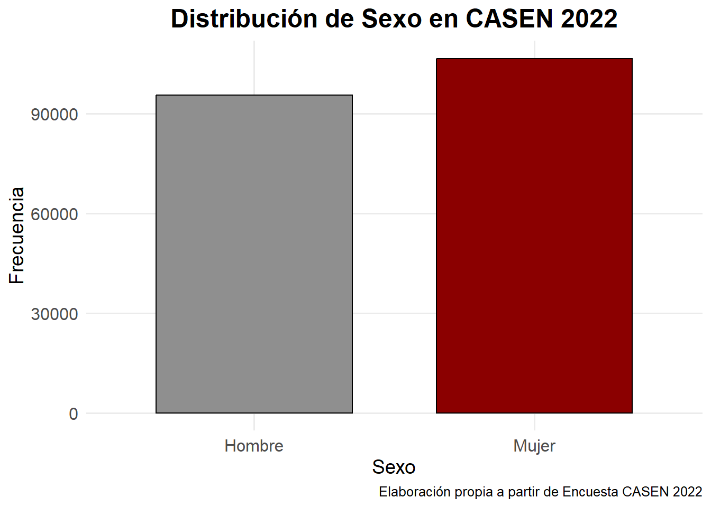
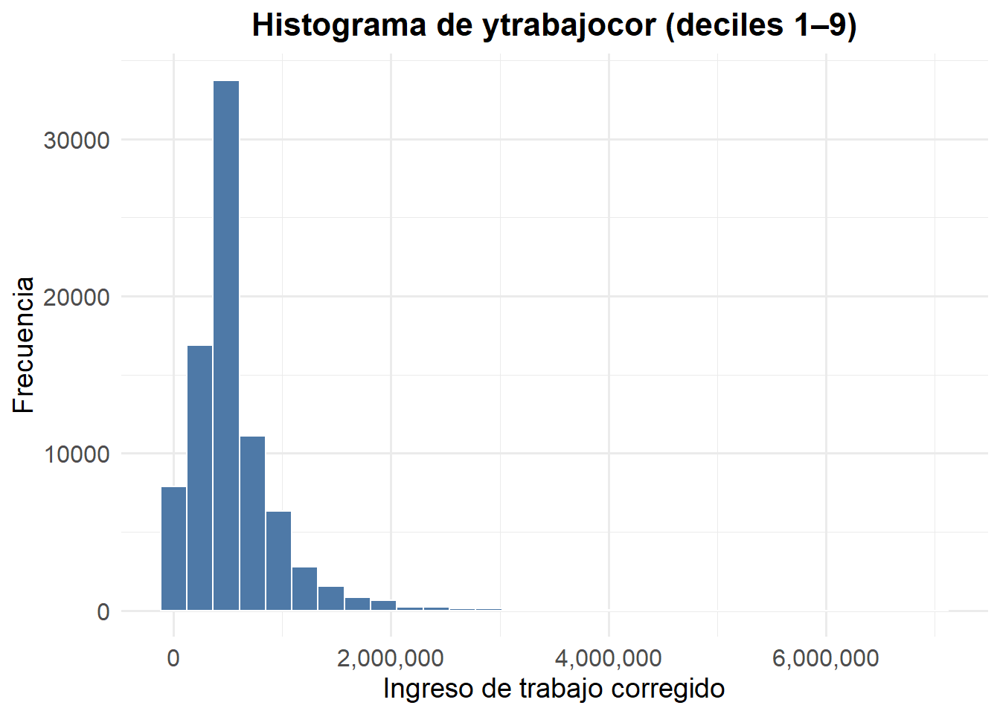
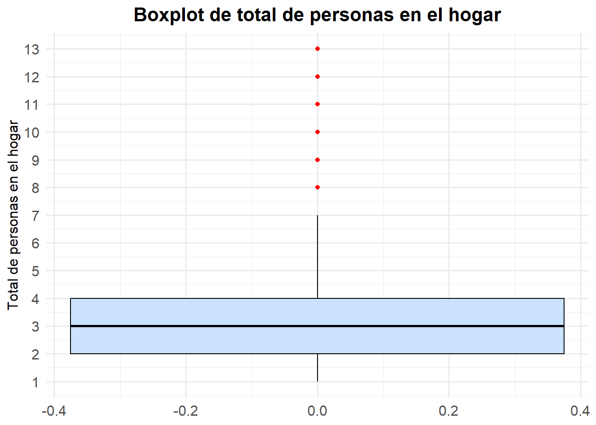
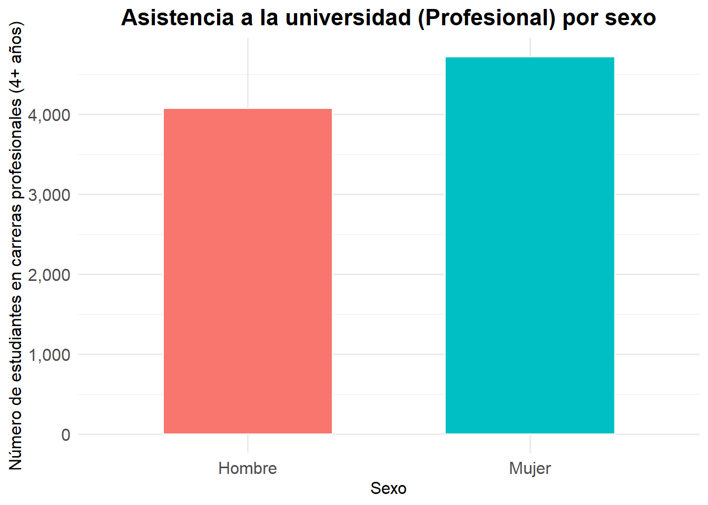
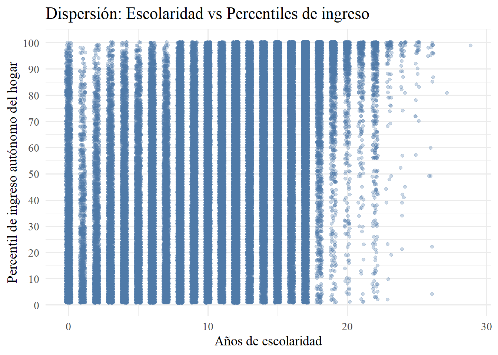
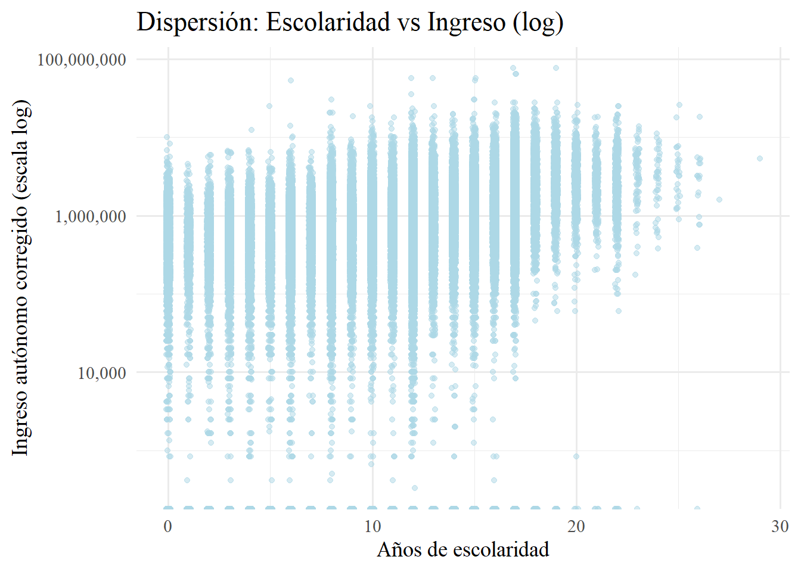
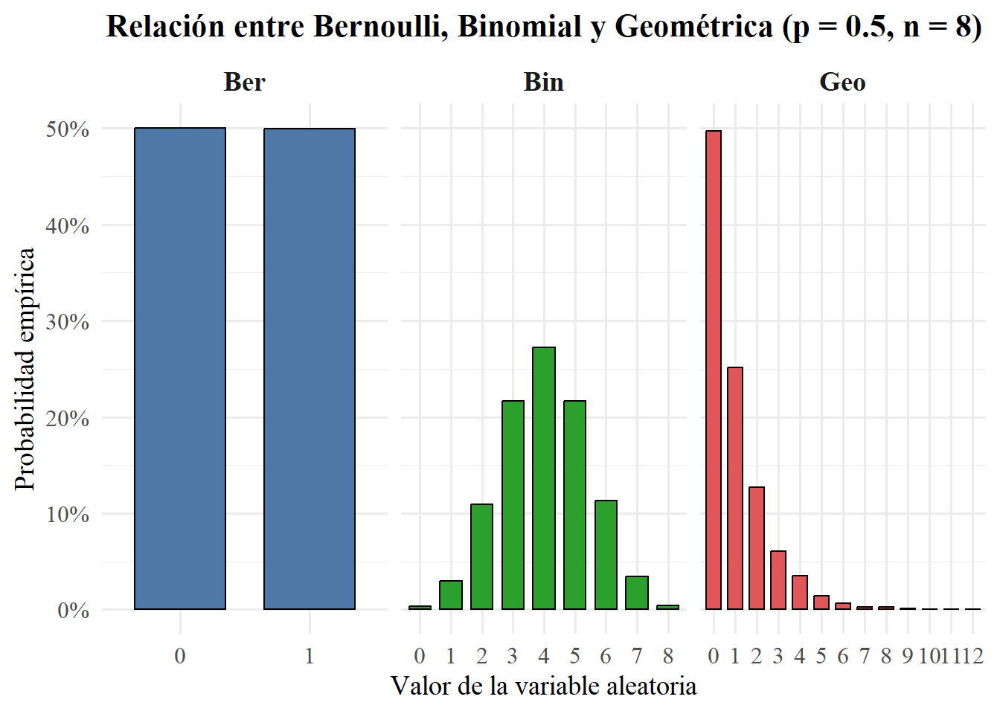

#Forma 1 (Forma clásica)
install.packages("tidyverse") # colección de paquetes, dplyr entre ellos
install.packages("dplyr") # manipular datos
install.packages("sjmisc") # explorar datos
#Forma 2 (Mejor para reproductibilidad)
invisible(lapply(c("tidyverse", # colección de paquetes, dplyr entre ellos
"dplyr", # manipular datos
"sjmisc"), # explorar datos
function(p)
if (!requireNamespace(p, quietly = TRUE)) install.packages(p)))
# Llamar librería
library(tidyverse)
library(dplyr)
library(sjmisc)
# Forma 3 (Mi favorita. Es `install.packages()` -si no está bajado- más `library`)
if (!requireNamespace("pacman", quietly = TRUE))
install.packages("pacman")
pacman::p_load(tidyverse, # colección de paquetes, dplyr entre ellos, pero también haven
dplyr, # manipular datos
psych, # para estadísticas descriptivas
sjmisc, # explorar datos
ggplot2, # para visualizar gráficos
scales) # para ajustar gráficosSesión 2: Estadística Descriptiva (II) y Prueba de Hipótesis (I)
Taller de Métodos y Técnicas de Investigación I
En esta sesión entraremos de lleno en estadística descriptiva, retomando desde contenidos de la sesión pasada, pero con un enfoque más riguroso. Sumado a esto, nos enfocaremos más en esto desde una perspectiva más estadística y usando R aplicadamente, sin deternos tanto en R mismo. Aunque también aprovecharé de mostrarle como crear funciones de usuario para hacer estadísticas descriptivas con una sola función.
Objetivos de la sesión
- Comprender la estadística descriptiva
- Conocer medidas de la estadística descriptiva
- Crear visualizaciones avanzadas.
- Introducción a test de hipótesis y estadística inferencial
Pero antes de comenzar, carguemos los paquetes que utilizaremos, donde además les muestro mi forma favorita de cargar y traer paquetes en un solo paso (con pacman).
1. Estadística descriptiva
Datos
Para comprender que son las estadísticas descriptivas, y para que las usaremos como futurxs sociólogxs, partamos viendo qué son los datos. Los datos son valores (o mediciones) de variables que han sido recolectados y organizados para su análisis. La palabra datos se define como información factual (como mediciones o estadísticas) utilizada como base para el razonamiento, para la discusión o para cálculos (Merrian-Webster). Existen tres tipos de estrucutas de datos:
Datos de corte transversal: son mediciones de un conjunto de variables para un gurpo de unidades (personas, hogares, empresas, países, etc.) en un mismo momento del tiempo. Un ejemplo de esto puede ser los puntajes PSU de un año dado. Una base de datos de datos de corte transversal, e.g., es la CASEN, la ENUT, la ENE, etc.
Datos de series de tiempo: sucesión de registros de una o varias variables de una única unidad, que son medidos en determinados momento del tiempo en un orden cronológico claro. Es importante resaltar que registra una única entidad/unidad a lo largo del tiempo. Un ejemplo podría ser el IMACEC o el PIB de tal a tal periodo.
Datos de panel o longitudinales: sucesión de registros de un conjunto de variables para un grupo de unidades medidas en varios momentos del tiempo. Los datos de panel/longitudinales combinan las dimensiones de corte transversal y series de tiempo de los datos, pues es una sucesión de registros de un conjunto de variables para un grupo de unidades, medidas en varios momentos del tiempo con un orden cronológico claro. Un ejemplo de esto podría ser la tasa de crecimiento anual del PIB real para un grupo de países de tal a cual periodo.
A su vez, existen dos tipos de recolección de datos:
Estudios observacionales: los datos se recopilan por medio de la observación de los valores de las variables de interés sin intervención o influencia en ellos; o
Experimentos: tras una exposición de ciertas unidades a una intervención, se observan los valores de las variables de interés presentes en los resultados.
Tipos de variables
Una variable es una característica o atributo que puede tomar valores diferentes para distintas unidades. Las variables tienen dos categorías principales que las distinguen:
- Variables categóricas: puede tomar un número limitado de valores definido sobre la base de alguna característica cualitativa. A su vez, dentro de las variables categóricas se encuentran
Variable categórica nominal: es una variable categórica/cualitativa sin ningún orden o jerarquía clara. Por ejemplo, una variable que registre nombres de un curso, comunas, países, etc. Dentro de las variables categóricas nominales, se encuentran las variables dummy, las que poseen solo dos valores a los que se les puede asignar un número, generalmente \(0\) o \(1\), donde \(1\) indica presencia del atributo y \(0\) ausencia.
Varible categórica ordinal: es una variable categórica/cualitativa que tiene un orden o jerarquí establecida entre sus categorías. Por ejemplo, el nivel educacional o las variables en “Escala Likert”
En R, para crear una variable cualitativa, deben escribirse entre comillas sus categorías, como ya vimos la sesión pasada. Por ejemplo,
# Variables categóricas
var_nominal <- c("Karl Marx", "Rosa Luxemburgo", "Wooldrigde")
class(var_nominal) # Comprobar naturaleza de la variable
## [1] "character"
var_ordinal_educ<- c("Secundaria Incompleta", "Secundaria Completa",
"Educación Superior Incompleta", "Educación Superior Completa")
var_ordinal_likert <- c("Muy malo", "Malo", "Maomeno",
"Bueno", "Muy bueno")
class(var_ordinal_educ) # Comprobar naturaleza de la variable
## [1] "character"
class(var_ordinal_likert) # Comprobar naturaleza de la variable
## [1] "character"Suele ser útil, en R, asignarles números a las variables cualitativas para un análisis estadísticos posteriores. Por ejemplo, podríamos tomar var_ordinal_likert y, además de que tenga sus categorías asociadas, también tengan un número. Por ejemplo, que "Muy malo" sea 1 y "Muy bueno" sea 5. Esto podemos hacerlo de dos maneras que mostramos de inmediato. Por cierto, la segunda la hacemos con haven que es un paquete dentro de tidyverse, y que usualmente usaremos ese paquete para cargar bases de datos, pero que también sirve para recodificar:
# 1) Versión con un factor ordenado (tienes la categoría y su código interno)
var_ordinal_likert <- factor(
var_ordinal_likert,
levels = c("Muy malo", "Malo", "Maomeno", "Bueno", "Muy bueno"),
ordered = TRUE
)
# Para ver el código numérico (1=Muy malo … 5=Muy bueno):
as.integer(var_ordinal_likert)
## [1] 1 2 3 4 5
# 2) Si prefieres un vector numérico “double” con etiquetas (dos niveles),
# puedes usar haven::labelled
var_ordinal_likert <- haven::labelled(
as.integer(factor(
var_ordinal_likert,
levels = c("Muy malo", "Malo", "Maomeno", "Bueno", "Muy bueno"),
ordered = TRUE
)),
labels = c(
"Muy malo" = 1,
"Malo" = 2,
"Maomeno" = 3,
"Bueno" = 4,
"Muy bueno" = 5
)
)
# Comprobamos:
var_ordinal_likert
## <labelled<integer>[5]>
## [1] 1 2 3 4 5
##
## Labels:
## value label
## 1 Muy malo
## 2 Malo
## 3 Maomeno
## 4 Bueno
## 5 Muy bueno- Variables cuantitativas: son variables medidas en una escala númerica, como la edad, temperatura, estatura, etc. Y, por lo tanto, que el número mismo indica ordinalidad y jerarquía entre los valores (\(x<x+1\)). También hay dos tipos de variables cuantitativas
Variable cuantitativa discreta: es aquella que solo puede tomar números específicos como valores, sin poder tomar un valor intermedio entre dos valores específicos. Es decir, que se expresan en números enteros. Matemáticamente, simplemente son variables en que sus valores \(x \in \mathbb{N}\). Un ejemplo, puede ser el número de ventas (no se puede vender -100), la edad de las personas encuestadas (no se puede tener -2), etc.
Variable cuantiativa continua: puede tomar como valores un número infinito de posibilidades dentro de un rango de números, por lo que se expresa en números reales: \(x\in \mathbb{R}\). Un ejemplo de esto puede ser una cuenta corriente, el peso de las personas, la temperatura, etc.
En R, las variables cuantitativas tienen por categorías números, sin “…”. Además, si se quiere dejar como variable cuantitativa discreta (integer), se le puede añadir una L después del número. Esto es porque en R cualquier literal numérico sin sufijo se interpreta por defecto como tipo numeric (variable cuantitativa). Al añadir la L se le indica a R que es un integer (número entero). No obstante, generalmente para el análisis estadístico no afectará mucho.
# Variables cuantitativas discretas
var_discreta_hijos <- c(0L, 1L, 2L, 3L, 4L)
var_discreta_autos <- c(1L, 0L, 2L, 1L, 3L)
class(var_discreta_hijos)
## [1] "integer"
class(var_discreta_autos)
## [1] "integer"
# Variables cuantitativas continuas
var_continua_altura <- c(1.65, 1.72, 1.58, 1.80, 1.75)
var_continua_peso <- c(65.4, 70.2, 58.9, 80.0, 72.5)
class(var_continua_altura) # numeric
## [1] "numeric"
class(var_continua_peso) # numeric
## [1] "numeric"Estadísticas descriptivas
Las estadísticas descriptivas son valores fácilmente interpretables y que entregan un “resumen” de las características más importantes de un conjunto de datos, además de que utilizan para su cálculo operaciones aritméticas simples. Las estadísticas descriptivas son el primer paso en el análisis exploratorio de datos. Antes del análisis estadístico más riguroso de los datos, es esencial examinar las estadísticas descriptivas de todas las variables para:
Detectar errores de medición o valores atípicos (outliers) en los datos.
Detectar patrones y tendencias en los datos.
Evaluar la plausibilidad de los supuestos de trabajo.
Establecer hipótesis de trabajo.
A su vez, las estadísticas descriptivas se pueden clasificar en tres grupos:
Medidas de localización o tendencia central: Se calculan para describir un valor central alrededor del cual se ubican (distribuyen) los datos. En otras palabras, estas medidas determinan el valor donde se ubican mayoritariamente las observaciones
Medidas de dispersión o variabilidad: Proporcionan una descripción de la “dispersión de los datos” o qué tan lejos están las observaciones de la tendencia central.
Medidas de posición: Resumen la posición relativa de valores específicos en los datos.
Antes de seguir profundizando esto, utilizaremos bases de datos reales y conocidas para ir ejemplificando el contenido con datos observacionales. Partamos con la Encuesta de Caracterización Socioeconómica Nacional (CASEN) más actual, la CASEN 2022. Esta se puede obtener en el siguiente link, que cuenta con 202.231 casos (encuestados) y 918 variables.
## Obtener ruta
getwd() # Para obtener nuestro directorio (en este casode nuestro RProject)
## [1] "C:/Users/Fran/OneDrive/Escritorio/UAH/MAGISTER ECONOMIA UCH/Ayudantías/Taller métodos/metodos-mgsocio-uah/lectures"
# Cargar formato sav (SPSS)
casen2022<-haven::read_sav("data-sesiones/CASEN 2022.sav")
dim(casen2022)
## [1] 202231 918
# Cargar formato dta (STATA)
# casen2022<-haven::read_dta(".../CASEN 2022.dta")Continuemos. Antes de pasar a estos tres grupos de estadísticas descriptivas, conviene tener en claro el concepto de estadísticos de orden. Los estadísticos de orden es la ordenación de un conjunto de datos u obsrvaciones, dond \(y_k\) es el \(k-\)ésimo menor valor del conjunto de observaciones. Por ejemplo, si tenemos estos cuatro datos: \[ x_1 =9; x_2=3, x_3 = 12; x_3 =1 ; x_5=2 \] Los estadísticos de orden, \(y_i\), corresponderían a \[ y_1=1; y_2=2; y_3=3; y_4=9; y_5=12 \] Es decir, la ordenación de \(x_i\) de menor a mayor. Dicho esto, pasemos, en primer lugar, a las medidas de localización o tendencia central.
1.1. Medidas de localización o tendencia central
Media o promedio
La media de \(n\) observaciones de una variable, (x_1, , x_n), que denotaremos por ({x}), está definida por la suma de los valores de todas las observaciones, dividida por el número de observaciones: \[
\bar{x} = \frac{x_1 + x_2 + \dots + x_n}{n} = \frac{1}{n} \sum_{i=1}^{n} x_i.
\] Por ejemplo, supongamos que los datos son: \[
x_1 = 0.7; \quad x_2 = 1.2; \quad x_3 = 0.9; \quad x_4 = 0.6; \quad x_5 = 1.4; \quad x_6 = 1.8; \quad x_7 = 2.5.
\] La media en este caso viene dada por: \[
\bar{x} = \frac{0.7 + 1.2 + 0.9 + 0.6 + 1.4 + 1.8 + 2.5}{7} = 1.3.
\] En R, la media se obtiene simplemente con el comando mean(). Veamos como obtener la media de alguna variable de interés en la CASEN 2022.
# Obtener media mediante mean()
mean(casen2022$ytrabajocor) # Ingreso del trabajo corregido
## [1] NA
# Ups!
mean(casen2022$ytrabajocor,
na.rm = TRUE) # ahora si :)
## [1] 667690.9Como se ve, el salario promedio de los encuestados de la CASEN 2022 es de 667.690CLP. El comando na.rm = TRUE es para sacar las observaciones NA de la variable, las cuales registran los casos
Mediana
La mediana es el valor medio de un conjunto de observaciones cuando se les ordena de menor a mayor. Si el número de observaciones es par, entonces la mediana es la suma de los dos valores medios, dividida por 2. Si ordenamos las observaciones del ejemplo anterior de menor a mayor obtenemos los estadísticos de orden del conjunto de observaciones: \[ y_1 = 0.6, \quad y_2 = 0.7, \quad y_3 = 0.9, \quad y_4 = 1.2, \quad y_5 = 1.4, \quad y_6 = 1.8, \quad y_7 = 2.5. \] Notar que los estadísticos de orden cumplen con \[ y_1 = \min(x_1, x_2, \dots, x_7), \quad y_7 = \max(x_1, x_2, \dots, x_7), \quad y_1 \leq y_2 \leq \dots \leq y_7. \] Entonces, para calcular la mediana se tiene que ordenar primero la muestra de datos de menor a mayor, tal que se cumpla con los estadísticos de orden. Así, la mediana en este ejemplo, que denotamos por \(\tilde{x}\), viene dada por: \[ \tilde{x} = y_4 = 1.2. \] Ahora bien, en este caso, tenemos un \(n\) impar. Luego, es más fácil establecer la mediana. Supongamos ahora que tenemos un número par de cantidad de datos, un \(n=6\), por ejemplo. \[ x_1 = 0.7, \quad x_2 = 1.2, \quad x_3 = 0.9, \quad x_4 = 0.6, \quad x_5 = 1.4, \quad x_6 = 1.8. \] Es decir, los mismos datos que antes, salvo que hemos excluido el valor más grande. Entonces los estadísticos de orden son: \[ y_1 = 0.6, \quad y_2 = 0.7, \quad y_3 = 0.9, \quad y_4 = 1.2, \quad y_5 = 1.4, \quad y_6 = 1.8. \] Y la mediana es: \[ \tilde{x} = \frac{y_3 + y_4}{2} = \frac{0.9 + 1.2}{2} = 1.05. \] Por lo tanto, la mediana en este caso es el promedio simple entre los dos números ``al medio’’ del conjunto de datos. Si tenemos que \(n=6\), entonces la mediana es el promedio entre \(x_3\) y \(x_4\), arrojando un valor nuevo. En suma, la mediana es un valor que puede o no puede estar en el conjunto de datos. Si el conjunto de dato es par, entonces será el promedio simple entre los 2 datos del medio y si es impar simplemente será el valor del medio.
En R esto se obtiene con median():
# Obtener mediana a través de median()
median(casen2022$ytrabajocor,
na.rm = TRUE) # Ingreso del trabajo corregido
## [1] 480000Como vemos, la mediana de los ingresos del trabajo (salario), es 480.000 CLP. Lo cual habla bastante de la dispersión de los ingresos, pues el promedio es de 667.690 CLP. Siguiendo la lógica de los estadísticos de orden, lo que tenemos es que el \(50\%\) de los encuestados gana 480.000 CLP o menos. Y, sin embargo, el promedio es de 667.690 CLP, i.e., de 187.690 CLP más. Esto se debe a que hay ingresos muy altos, que elevan el promedio. Y la media es una medida sensible a los valores extremos. En breve, profundizaremos sobre esto, pero tiene que ver con robustez de las medidas de localización, lo cual será clave más adelante para para realizas estimaciones con estas medidas.
Moda
La moda es el valor más frecuente de un conjunto de observaciones. Un conjunto de valores puede tener más de una moda. Por ejemplo, supongamos que los datos son: \[ x_1 = 0.7; \quad x_2 = 1.2; \quad x_3 = 1.2; \quad x_4 = 0.6; \quad x_5 = 1.4; \quad x_6 = 1.8; \quad x_7 = 2.5. \] Entonces la moda, que denotaremos por \(\tilde{\tilde{x}}\)1, viene dada por: \[ \tilde{\tilde{x}}= 1.2. \] Para un conjunto de valores puede haber más de una moda.
En R, no hay un “paquete base” para extraer la moda. Pero si se puede hacer una función, o bien, usar paquetes. Veamos
# Moda en el caso de datos unimodales discretos
x <- c(1, 5, 1, 6, 2, 1, 6, 7, 1)
#Función para calcular la moda
mode <- function(x) {
return(as.numeric(names(which.max(table(x)))))
}
mode(x)
## [1] 1
options(scipen = 999) # Para desactivar notación cientifica
mode(casen2022$ytrabajocor)
## [1] 400000
# Moda con mfv() de modeest
pacman::p_load(modeest)
modeest::mfv(casen2022$ytrabajocor, na_rm = TRUE)
## [1] 400000Como se puede observar, la moda de los ingresos del trabajo es de 400.000 CLP. Es decir, que el valor que más se repite entre los salarios de los encuestados es de 400 lucas.
1.1.1. Robustez de las medidas de localización
Ahora bien, ¿cuán robustas son las medidas de localización? Un tema a considerar es cuál es el impacto de observaciones aberrantes en las medidas de localización, es decir, qué impacto tiene la presencia de una fracción pequeña de observaciones con errores muy grandes en su registro o que son atípicas por otro motivo en el valor de las medidas de localización.
Hablaremos indistintamente de observaciones aberrantes, observaciones extrañas y outliers. Si el número de observaciones es pequeño, se puede investigar uno por uno los valores aberrantes y corregir, reemplazar o eliminar las observaciones en cuestión. Sin embargo, cuando el número de observaciones es más grande, uno quisiera medidas de localización que sean insensibles a la presencia de una fracción moderada de observaciones extrañas y que, al mismo tiempo, sean un buen resumen numérico de la tendencia central de los datos. Analicemos, pues, cuán robusta son estas medidas.
Robustez de la media
Supongamos que los datos son \[ x_1 = 0.7;\ x_2 = 1.2;\ x_3 = 0.9;\ x_4 = 0.6;\ x_5 = 1.4;\ x_6 = 1.8;\ x_7 = 2.5. \] Como vimos la media viene dada por \(\bar{x} = 1.3\). Intuitivamente la media no es robusta, pues un solo outlier puede tener un efecto devastador sobre su valor. En efecto, si una de las observaciones, digamos la primera, es reportada con un error de medición \(e\), de modo que \[ x_1 = 0.7 + e \] entonces la media, como función del error \(e\), será: \[ \bar{x}(e) = 1.3 + \frac{e}{7} \] y tenemos que \[ \lim_{e \to \infty} \bar{x}(e) = \infty, \quad \lim_{e \to -\infty} \bar{x}(e) = -\infty. \] En el caso más general tenemos \(\bar{x}(e) = \bar{x}(0) + \frac{e}{n}\), de modo que esta expresión tiende a \(\pm\infty\) cuando \(e\) tiende a \(\pm\infty\).
En suma, la media es una medida de localización central muy sensible a valores atípicos/outliers. En este sentido, a pesar de que indica información, hay que tener cuidado y en general suele ser complementada con otras medidas, tal como vimos con la mediana.
Robustez de la mediana
Como vimos, los estadísticos de orden de las observaciones anteriores están dadas por: \[ y_1 = 0.6, \quad y_2 = 0.7, \quad y_3 = 0.9, \quad y_4 = 1.2, \quad y_5 = 1.4, \quad y_6 = 1.8, \quad y_7 = 2.5. \] Vimos también que la mediana, que denotamos por \(\tilde{x}\), viene dada por: \[ \tilde{x} = y_4 = 1.2. \] Ahora, suponiendo nuevamente que la primera observación se midió con error \(e\), de modo que \(x_1 = 0.7 + e\), y denotando por \(\tilde{x}(e)\) la mediana cuando \(x_1\) se reemplaza por \(x_1 + e\), tenemos \[ \tilde{x}(e) = \begin{cases} 1.2 & \text{si } e \leq 0.5, \\ 0.7 + e & \text{si } 0.5 < e \leq 0.7, \\ 1.4 & \text{si } e > 0.7. \end{cases} \] En el caso general con \(n = 2m+1\) observaciones, donde elegimos tamaño impar solo para simplificar las expresiones, tendremos que \(\tilde{x}(e) \in [y_m, y_{m+2}]\). Por tanto, la influencia de un valor aberrante en la mediana está acotada. Es decir, la mediana es una medida robusta.
Robustez de la moda
Supongamos que los datos están dados por: \[ x_1 = 0.7, \quad x_2 = 1.2, \quad x_3 = 1.2, \quad x_4 = 0.6, \quad x_5 = 1.4, \quad x_6 = 1.8, \quad x_7 = 99.9. \] Entonces la moda viene dada por \(\tilde{\tilde{x}} = 1.2\).
Suponiendo nuevamente que la primera observación se midió con error \(e\), de modo que \(x_1 = 0.7 + e\), y denotando por \(\tilde{\tilde{x}}(e)\) la moda cuando \(x_1\) se reemplaza por \(x_1 + e\), tenemos que: \[ \lim_{e \to \infty} \tilde{\tilde{x}}(e) = 1.2, \quad \lim_{e \to -\infty} \tilde{\tilde{x}}(e) = 1.2. \] En cambio, si la observación con error es la segunda observación, de modo que se midió \(x_2 = 1.2 + e\), para \(e = 0.6\), la moda será \(1.8\). El cambio en la moda puede ser mucho mayor, existen valores de \(e\) para los cuales la moda es \(99.9\). En contraste, no existen valores de \(e\) para los cuales la mediana cambie tanto.En suma, la moda es muy sensible a la presencia de outliers, no obstante va depende en qué localización de los datos se encuentre. Entonces, no siempre es muy sensible, pero a veces sí.
Sintesis
Como se desprende de las expresiones derivadas en los apartados anteriores, el impacto de valores extremos o atípicos es acotado tanto para la mediana como para la moda, mientras que para la media crece sin límite cuando \(|e|\) tiende a infinito.Al mismo tiempo, la mediana pareciera ser más robusta que la moda, pues la influencia de errores de medición es menor. La moda pareciera estar entremedio, el impacto de outliers es acotado pero puede ser mucho más grande que su impacto en la mediana. Entonces, ¿media, mediana o moda?
En general, la moda se usa poco para resumir en una cifra la localización de los datos. Probablemente, porque es “demasiado localizada”. Por ejemplo, puede que la moda esté en 0, porque un 10% de las observaciones son iguales a cero, pero la mayoría de los datos sean mayores que 100. En casos como este la moda captura muy mal la localización de los datos, pues uno quisiera algún número mayor que 100, no cero. La media es la medida de localización más utilizada en la práctica, seguida de la mediana. Esto nos lleva a considerar las siguientes ventajas y desventajas
Mediana: más robusta.
Media: usa toda la información. Al menos intuitivamente, la robustez de la mediana tiene como contraparte que usa poco la información disponible.
Entonces, la media entrega más información, pero es menos robusta, en cambio la mediana sufre la ventaja/desventaja opuesta. La digresión anterior motiva considerar medidas de localización más robustas que la media y que usan más información que la mediana. Con ese objetivo consideramos a continuación las medias podadas.
Medias podadas
Supongamos que los datos están dado por: \[ x_1 = 0.7, \; x_2 = 1.2, \; x_3 = 0.9, \; x_4 = 0.6, \; x_5 = 1.4, \; x_6 = 1.8, \; x_7 = 2.5, \] Como vimos, sus estadísticos de orden correspondientes son: \[ y_1 = 0.6, \; y_2 = 0.7, \; y_3 = 0.9, \; y_4 = 1.2, \; y_5 = 1.4, \; y_6 = 1.8, \; y_7 = 2.5. \]
Definimos la siguiente medida de localización: \[ \bar{x}^p = \frac{1}{5}(y_2 + y_3 + \dots + y_6). \] Es decir, primero podamos los datos de la muestra ordenada de menor a mayor, removiendo un valor de cada extremo y luego calculamos el promedio de las observaciones podadas. El estadístico descriptivo que resulta se conoce como media podada, de nivel \(k=1\) porque removimos una observación de cada extremo. Lo denominamos por \(\bar{x}^p\). Para las observaciones en cuestión tenemos que la media podada de nivel 1 es 1,2.
En síntesis, se eliminan los valores extremos, el más pequeño y el más grande en este caso. Y después calculamos el promedio. Con ello, se le agrega mayor robustez y estaremos usando más información que usando la mediana. Veamos el caso general, no solo para \(k=1\)
Medias podadas: Caso General
Sean \(x_1, \dots, x_n\) las observaciones y \(y_1, \dots, y_n\) los estadísticos de orden correspondientes. Entonces, para \(k < n/2\) definimos la media podada de nivel \(k\) mediante: \[ \bar{x}^p = \frac{1}{n - 2k} \sum_{i = k+1}^{n-k} y_i. \]
En palabras: dadas observaciones \(x_1, \dots, x_n\), la media podada de nivel \(k\) será el promedio de los valores que se obtiene luego de remover \(k\) observaciones de cada uno de sus extremos (las \(k\) más grandes y las \(k\) más pequeñas). Las medias podadas de nivel \(k = 1\) —se remueve el mínimo y máximo— se utilizan para pasar de las evaluaciones individuales de los jurados en varios deportes, entre ellos nado sincronizado y gimnasia, a la evaluación agregada.
En R, esto se puede hacer de dos formas, con una función o con mean() y especificaciones:
# Datos de ejemplo
x <- c(0.7, 1.2, 0.9, 0.6, 1.4, 1.8, 2.5)
# 1) Función manual para media podada de nivel k
media_podada <- function(x, k) {
n <- length(x)
if (2*k >= n) stop("k debe ser menor que n/2")
y <- sort(x)
mean(y[(k + 1):(n - k)])
}
# Cálculo de la media podada para k = 1
media_podada(x, 1)
## [1] 1.2
# 2) Usando la función base mean() con el argumento trim
# trim espera la fracción a recortar por cada extremo: k/n
k <- 1
n <- length(x)
mean(x, trim = k / n)
## [1] 1.2
# Media podada de los ingresos del trabajo
mean(casen2022$ytrabajocor,
trim = k/n,
na.rm=TRUE)
## [1] 521452.3Medias Windorizadas (opcional)
Esto es una medición opcional en el sentido de que no se usa mucho. Pero puede ser útil. Supongamos que los datos están dado por: \[ x_1 = 0.7; \, x_2 = 1.2; \, x_3 = 0.9; \, x_4 = 0.6; \, x_5 = 1.4; \, x_6 = 1.8; \, x_7 = 2.5. \] Como vimos, sus estadísticos de orden correspondientes son: \[ y_1 = 0.6, \, y_2 = 0.7, \, y_3 = 0.9, \, y_4 = 1.2, \, y_5 = 1.4, \, y_6 = 1.8, \, y_7 = 2.5. \] Definimos la siguiente medida de localización: \[ \bar{x}^p = \frac{1}{7} [y_2 + y_2 + y_3 + y_4 + y_5 + y_6 + y_6]. \]
Es decir, ordenadas las observaciones de menor a mayor, sustituimos un valor de cada extremo por el valor inmediatamente anterior o posterior y luego calculamos el promedio de todos los valores. El estadístico descriptivo que resulta se conoce como media winsorizada, de nivel \(k = 1\) porque sustituimos una observación de cada extremo. Lo denotamos por \(\bar{x}^w\). Para las observaciones en cuestión tenemos que la media winsorizada de nivel 1 es 1,21 (aproximadamente).
Medias Winsorizadas: Caso General
Sean \(x_1, \dots, x_n\) las observaciones y \(y_1, \dots, y_n\) los estadísticos de orden correspondientes. Entonces, para \(k < n/2\) definimos la media winsorizada de nivel \(k\) mediante: \[ \bar{x}^w = \frac{k y_{k+1} + \sum_{i=k+1}^{n-k} y_i + k y_{n-k}}{n}. \]
En palabras: dadas observaciones \(x_1, \dots, x_n\), la media winsorizada de nivel \(k\) será el promedio de los valores que se obtiene luego de sustituir \(k\) observaciones de cada uno de sus extremos (las \(k\) más grandes y las \(k\) más pequeñas) por el valor inmediatamente anterior o posterior. En R, se puede hacer con funciones nuevamente, o con el paquete DescTools.
# Datos de ejemplo
x <- c(0.7, 1.2, 0.9, 0.6, 1.4, 1.8, 2.5)
# 1) Función winsorizada + argumento na.rm
media_winsorizada <- function(x, k, na.rm = FALSE) {
if (na.rm) x <- x[!is.na(x)]
n <- length(x)
if (2*k >= n) stop("k debe ser menor que n/2")
y <- sort(x)
# sustituir k extremos
y[1:k] <- y[k + 1]
y[(n - k + 1):n] <- y[n - k]
mean(y)
}
# Cálculo de la media winsorizada para k = 1
media_winsorizada(x, 1)
## [1] 1.214286
media_winsorizada(casen2022$ytrabajocor, 1,
na.rm=TRUE)
## [1] 667567.7
# 2) Usando la función Winsorize() del paquete DescTools
pacman::p_load(DescTools)
# Vector limpio de NAs
x <- na.omit(casen2022$ytrabajocor)
# 3) Definimos k y calculamos n
k <- 1
n <- length(x)
# 4) Calculamos los cuantiles que usarán de umbrales
umbrales <- quantile(x, probs = c(k/n, 1 - k/n), na.rm = TRUE)
# 5) Winsorizamos usando 'val = umbrales'
x_wins <- Winsorize(x, val = umbrales)
# 6) Y finalmente sacamos la media
mean(x_wins)
## [1] 667567.7Síntesis
¿Qué hacemos en la práctica?
Si se desea resumir la localización de los datos, parta por calcular la media, mediana y moda, así como también las medias podadas para algunos valores de \(k\) (por ejemplo, \(k/n \simeq 0,05\) y \(k/n \simeq 0,1\))
Si obtiene valores similares, reportar la media y mediana
Si hay diferencias importantes, mire los datos con cuidado, entienda de dónde vienen las diferencias y luego decida qué hacer.
1.2. Medidas de dispersión
La varianza
Las medidas de dispersión lo que buscan es determinar cuán dispersos están los datos con respectos a una medida de tendencia central. Una de ellas es la varianza. La varianza es una medida que resume la dispersión de las observaciones con respecto a su media.
Dadas \(n\) observaciones, \(x_1, \ldots, x_n\), la varianza de este conjunto de datos, que denotaremos por \(\hat{\sigma}^2\), está dada por: \[ \begin{aligned} \hat{\sigma}^2 &= \frac{(x_1 - \bar{x})^2 + (x_2 - \bar{x})^2 + \dots + (x_n - \bar{x})^2}{n}\\ &= \frac{1}{n} \sum_{i=1}^{n} (x_i - \bar{x})^2 \\ &= \frac{1}{n} \sum_{i=1}^{n} x_i^2 - \bar{x}^2. \end{aligned} \]
Por ejemplo, si tuvieramos que \[ x_1 = 0.7; \quad x_2 = 1.2; \quad x_3 = 0.9; \quad x_4 = 0.6; \quad x_5 = 1.4; \quad x_6 = 1.8; \quad x_7 = 2.5, \] entonces, la varianza de estos datos sería \[ \begin{aligned} \hat{\sigma}^2 = \frac{(0.7 - 1.3)^2 + (1.2 - 1.3)^2 + (0.9 - 1.3)^2}{7} \\ + \frac{(0.6 - 1.3)^2 + (1.4 - 1.3)^2 + (1.8 - 1.3)^2 + (2.5 - 1.3)^2}{7} = 0.39. \end{aligned} \]
Ojo,cuando hay muchos datos, la fórmula más simple es el promedio de las observaciones al cuadrado, menos la media al cuadrado. O sea, la última igualdad que pusimos anteriormente, es decir,
\[
\hat{\sigma}^2 =\frac{1}{n} \sum_{i=1}^{n} x_i^2 - \bar{x}^2.
\] Esta, sin embargo, es una demostración de la primera sumatoria, aunque bastante trivial.
Proof. Si \[ \frac{1}{n} \sum_{i=1}^n (x_i - \bar{x})^2 = \frac{1}{n} \sum_{i=1}^n x_i^2 - \bar{x}^2 \] En efecto, \[ \begin{aligned} \frac{1}{n} \sum_{i=1}^n (x_i - \bar{x})^2 &= \frac{1}{n} \sum_{i=1}^n \left( x_i^2 - 2x_i \bar{x} + \bar{x}^2 \right)\\ &= \frac{1}{n} \sum_{i=1}^n x_i^2 - 2 \bar{x} \frac{1}{n} \sum_{i=1}^n x_i + \frac{1}{n} \sum_{i=1}^n \bar{x}^2\\ &= \frac{1}{n} \sum_{i=1}^n x_i^2 - 2 \bar{x}^2 + \bar{x}^2\\ &= \frac{1}{n} \sum_{i=1}^n x_i^2 - \bar{x}^2. \end{aligned} \]
En R es mucho más fácil que estos cálculos tediosos. Esto se hace con el comando de R Base var(). No obstante, hay que tener en cuenta que var() es por defecto la varianaza muestra. Asumiendo que tenemos datos poblaciales podemos hacer dos cosas2. Veamos cómo:
# Datos de ejemplo
x <- c(0.7, 1.2, 0.9, 0.6, 1.4, 1.8, 2.5)
# Varianza poblacional
var_poblacional <- mean((x - mean(x))^2)
# Varianza simplificada
var_pobl_simplificada <- mean(x^2) - mean(x)^2
# Varianza muestral
var_muestral <- var(x)
# Varianza muestral de casen2022$ytrabajocor
var_casen_muestral <- var(casen2022$ytrabajocor, na.rm = TRUE)
# Mostrar resultados
var_poblacional
## [1] 0.3885714
var_pobl_simplificada
## [1] 0.3885714
var_muestral
## [1] 0.4533333
var_casen_muestral
## [1] 665844368478La desviación estándar
Una vez se tiene la varianza, la desviación estándar es muy fácil de calcular, pues es simplemente la raíz cuadrada de la varianza. La desviación estándar también es una medida de dispersión de los elementos del conjunto de observaciones con respecto a su media.
Dadas \(n\) observaciones, $x_1, , x_n $, la desviación estándar de este conjunto de datos, que denotaremos por \(\hat{\sigma}\), está dada por la raíz cuadrada de la varianza: \[
\hat{\sigma} = \sqrt{\hat{\sigma}^2} = \sqrt{\frac{(x_1 - \bar{x})^2 + (x_2 - \bar{x})^2 + \ldots + (x_n - \bar{x})^2}{n}} = \sqrt{\frac{1}{n} \sum_{i=1}^{n} (x_i - \bar{x})^2}.
\] Por ejemplo, si \[
x_1 = 0.7; \, x_2 = 1.2; \, x_3 = 0.9; \, x_4 = 0.6; \, x_5 = 1.4; \, x_6 = 1.8; \, x_7 = 2.5,
\] entonces, la desviación estándar de estos datos es: \(\hat{\sigma} = 0.62\). A diferencia de lo que ocurre con la varianza, la desviación estándar está medida en las mismas unidades que el conjunto de observaciones bajo análisis. Como veremos más adelante, esto hace que su interpretación sea más fácil y explica por qué se usa más que la varianza como medida de dispersión. Por lo tanto, la ventaja principal es esa. La desviación estándar está medida en las mismas unidades que las observaciones que estamos trabajando, y no así la varianza. En R es muy simple de hacer, con sd(). Al igual que con var(), sd() calcula por defecto al desviación estándar muestral.
# Datos de ejemplo
x <- c(0.7, 1.2, 0.9, 0.6, 1.4, 1.8, 2.5)
# Desviación estándar poblacional
sd_poblacional <- sqrt(mean((x - mean(x))^2))
# Desviación estándar simplificada
sd_simplificada <- sqrt(mean(x^2) - mean(x)^2)
# Desviación estándar muestral
sd_muestral <- sd(x)
# Desviación estándar muestral de casen2022$ytrabajocor
sd_casen_muestral <- sd(casen2022$ytrabajocor, na.rm = TRUE)
# Mostrar resultados
sd_poblacional
## [1] 0.623355
sd_simplificada
## [1] 0.623355
sd_muestral
## [1] 0.6733003
sd_casen_muestral
## [1] 815992.9Considerando la desviación estándar es una medida de dispersión que describe la descripción de los datos en las mismas unidades que el conjunto de observaciones nos sirve para comparar ahora var_casen_muestral con sd_casen_muestral. En el primer caso, var_casen_muestral = 665844368478, significa simplemente que la varianza de los datos es de ese valor, esa es su varianza. En cambio, sd_casen_muestral = 815992.9 implica que la variación de los datos es de 815.992 CLP, pues la variable ytrabajocor mide pesos chilenos. En el caso de la varianza, nos dice cuán dispersos están los datos respecto a la media. En el caso de la desviación estándar, es también una medida de dispersión de los elementos del conjunto de observaciones con respecto a su media, pero que está en las unidades de la variable en cuestión, es decir, que hay una dispersión de los datos de 815.992 CLP respecto de la media (667.690 CLP, como habíamos visto). Por cierto, los valores elevados de dispersión son típicos en los ingresos, pues dada la desigualdad en estos, suelen tener una alta dispersión los datos de ingresos.
1.2.1. Robustez en las medidas de dispersión
Ahora bien, ¿cuál es más robusta? La desviación estándar muestral y la varianza muestral no son medidas robustas de la dispersión de los datos. Aunque el álgebra es un poco más complejo, el problema es similar al que vimos con la media muestral.
Por ejemplo, denotando por \(\hat{\sigma}^2(e)\) la varianza muestral cuando \(x_1\) se mide con error \(e\), se tiene que, usando el resultado de que la varianza muestral es igual a la media muestral de los cuadrados menos el cuadrado de la media muestral:
Proof. \[ \begin{aligned} \hat{\sigma}^2(e) &= \frac{1}{n} \left[ (x_1 + e)^2 + \sum_{i=2}^{n} x_i^2 \right] - \left( \frac{1}{n} \left[ (x_1 + e) + x_2 + \ldots + x_n \right] \right)^2 \\ &= \frac{1}{n} \sum_{i=1}^{n} x_i^2 + \frac{x_1 e}{n} + \frac{e^2}{n} - \left( \bar{x} + \frac{e}{n} \right)^2 \\ &= \frac{1}{n} \sum_{i=1}^{n} x_i^2 + \frac{x_1 e}{n} + \frac{e^2}{n} - \bar{x}^2 - 2 \bar{x} \frac{e}{n} - \frac{e^2}{n^2} \\ &= \hat{\sigma}^2(0) + \frac{2}{n}(x_1 - \bar{x})e + \frac{n-1}{n^2}e^2. \end{aligned} \] De donde se concluye que \[ \lim_{e \to \pm \infty} \hat{\sigma}^2(e) = +\infty, \] y, por lo tanto, también que \[ \lim_{e \to \pm \infty} \hat{\sigma}(e) = +\infty. \]
En simple, las dos medidas de dispersión, la varianza y la desviación estándar, tienden a infinito positivo cuando el término de error tiende - o + infinito. Por lo tanto, ambas son medidas que no son robustas y, por lo tanto, sensibles a la presencia de valores extremos, de outliers.
El rango
El rango es la diferencia entre los valores más grande y más pequeño de un conjunto de observaciones de una variable. Al tomar el valor máximo y mínimo de los datos, permite obtener una idea de la dispersión de los datos. Así, cuanto mayor es el rango, aún más dispersos están los datos. Por ejemplo, si \[ x_1 = 0.7; \quad x_2 = 1.2; \quad x_3 = 0.9; \quad x_4 = 0.6; \quad x_5 = 1.4; \quad x_6 = 1.8; \quad x_7 = 2.5, \] entonces, como ya vimos: \[ y_1 = 0.6, \quad y_2 = 0.7, \quad y_3 = 0.9, \quad y_4 = 1.2, \quad y_5 = 1.4, \quad y_6 = 1.8, \quad y_7 = 2.5. \] Entonces el rango está dado por: \[ y_7 - y_1 = 2.5 - 0.6 = 1.9. \]
Como ya se puede intuir a estas alturas, el rango tampoco es una medida de dispersión robusta, pues basta un outlier en los valores mínimos o máximos para que el rango se distorsiones. Así, aunque el rango de un conjunto de datos es simple de calcular, su valor no es muy útil porque depende fuertemente de valores extremos y, por tanto, no es robusto a la presencia de outliers. Formalmente, si tomamos el ejemplo anterior, tendríamos que \[
\begin{aligned}
y_1 = 0.6, \quad y_2 = 0.7, \quad y_3 = 0.9, &\quad y_4 = 1.2, \quad y_5 = 1.4, \quad y_6 = 1.8, \quad y_7 = 2.5.\\
y_7 - y_1 = &2.5 - 0.6 = 1.9.
\end{aligned}
\] Ahora bien, suponiendo nuevamente que la primera observación se midió con error \(e\), de modo que \(x_1 = 0.7 + e\), y denotando por \(y_7(e)\) y \(y_1(e)\) al valor máximo y mínimo cuando \(x_1\) se reemplaza por \(x_1 + e\), respectivamente, tenemos que: \[
\lim_{e \to -\infty}(y_7(e) - y_1(e)) = \infty, \quad \lim_{e \to +\infty}(y_7(e) - y_1(e)) = \infty.
\] Por lo que valores aberrantes o outliers tienen efectos brutales en el rango. En R es muy fácil de hacer, se puede “manualmente” o con range() y diff(). Lo mostramos y luego pasamos a la primera medida de dispersión robusta: el rango intercuartil.
# Para obtener el rango (max–min) usa diff(range(x, na.rm=TRUE))
x <- c(0.7, 1.2, 0.9, 0.6, 1.4, 1.8, 2.5)
# Rango con max–min
r1 <- max(x) - min(x)
# Rango con diff(range())
r2 <- diff(range(x, na.rm = TRUE)) # range(x, na.rm=TRUE) devuelve c(min, max), no la diferencia
# En tu variable de casen2022
r_casen_1 <- max(casen2022$ytrabajocor, na.rm = TRUE) -
min(casen2022$ytrabajocor, na.rm = TRUE)
r_casen_2 <- diff(range(casen2022$ytrabajocor, na.rm = TRUE))
# Mostrar resultados
r1
## [1] 1.9
r2
## [1] 1.9
r_casen_1
## [1] 50966585
r_casen_2
## [1] 50966585El rango intercuartil
El primer cuartil de un conjunto de observaciones de una variable, que denotaremos por \(q_1\), es el valor para el cual el 25% de las observaciones son más pequeñas y el 75% son más grandes. En otras palabras, el primer cuartil es la mediana del 50% más pequeño de los datos.
El segundo cuartil, \(q_2\), es el mismo valor que aquel de la mediana (50% son más pequeños, 50% son más grandes).
El tercer cuartil, \(q_3\), es el valor para el cual el 25% de las observaciones son más grandes y el 75% son más pequeñas. En otras palabras, el tercer cuartil es la mediana del 50% más grande de los datos.
El rango intercuartil, que denotaremos , está dado por: \(q_3 - q_1\).
Notar que el RIC es el rango del conjunto de observaciones con los cuartos más pequeño y más grande eliminados (podados), similar en espíritu a las observaciones que se consideran para calcular la media podada.Entonces, formalicemos su robustez.
Por ejemplo, supongamos que las observaciones (ordenadas de menor a mayor) son: \[ 43, 48, 50, 50, 52, 53, 56, 58, 59, 60, 62, 65, 66, 68, 70, 71, 74, 76, 78, 80, \] entonces los cuartiles de este conjunto de observaciones son: \[ q_1 = 52.5, \quad q_2 = 61, \quad q_3 = 70.5 \] y el RIC viene dado por \(q_3 - q_1 = 18\)
Ahora bien, suponiendo que el valor 43 se midió con un error \(e\), de modo que su valor es \(43 + e\), y denotando por \(RIC(e)\) el valor del rango intercuartil cuando el valor 43 se reemplaza por \(43 + e\), tenemos que: \[
RIC(e) \in [16,18]
\] De modo que el RIC es una medida de dispersión de los datos robusta a la presencia de outliers. Para calcular cuartiles en R se usa quantile(). Lo importante es especificar adecuadamente el cuantil de interés (50%, 75%, etc.) A su vez, entre los paquete de R base, específicamente en stats, se tiene IQR() nos permite calcular rangos intercuartiles.
# Datos de ejemplo
x <- c(43, 48, 50, 50, 52, 53, 56, 58, 59, 60, 62, 65, 66, 68, 70, 71, 74, 76, 78, 80)
# Calcular cuartiles
q1 <- quantile(x, 0.25)
q2 <- median(x)
q3 <- quantile(x, 0.75)
# Rango intercuartil
ric <- q3 - q1
# Para casen2022$ytrabajocor
x_casen <- casen2022$ytrabajocor
q1_casen <- quantile(x_casen, 0.25, na.rm = TRUE)
q2_casen <- median(x_casen, na.rm = TRUE)
q3_casen <- quantile(x_casen, 0.75, na.rm = TRUE)
ric_casen <- q3_casen - q1_casen
# Alternativa con función base
ric_casen2 <- IQR(x_casen, na.rm = TRUE)
# Mostrar resultados
q1; q2; q3; ric
## 25%
## 52.75
## [1] 61
## 75%
## 70.25
## 75%
## 17.5
q1_casen; q2_casen; q3_casen; ric_casen; ric_casen2
## 25%
## 337500
## [1] 480000
## 75%
## 763333
## 75%
## 425833
## [1] 4258331.3. Medidas de posición
Los percentiles
El percentil de un conjunto de observaciones es una medida de posición que indica, una vez ordenados los datos de menor a mayor, el valor por debajo del cual se encuentra un porcentaje dado de observaciones. En general, el percentil \(k\)-ésimo, que denotaremos por \(p_k\), es un valor para el cual un \(k\%\) por ciento de las observaciones son menores que ella.
La definición anterior es un tanto vaga: ¿menor o igual?, ¿qué pasa si no hay valores que cumplan?, ¿qué pasa si hay varios? Se pueden adoptar varios criterios, todos los cuales arrojan resultados parecidos cuando se aplican con conjuntos grandes de observaciones.
Notar que, en general, \(p_{25} = q_1\), \(p_{50}\) es la mediana y \(p_{75} = q_3\). Por ejemplo, si las observaciones (ordenadas de menor a mayor) son: \[ 43, 48, 50, 50, 52, 53, 56, 58, 59, 60, 62, 65, 66, 68, 70, 71, 74, 76, 78, 80, \] y exigimos que los percentiles sean observaciones y la definición es con “menor o igual”, tenemos: \[ p_{10} = 48, \quad p_{25} = 52, \quad p_{50} = 60, \quad p_{75} = 68, \quad p_{100} = 76. \] En R no hay una distinción entre cuantiles y percentiles a nivel de comando. Ahora bien, para obtener los percentiles en la posición que nos interesan podemos hacer lo siguiente:
# Datos de ejemplo
x <- c(43, 48, 50, 50, 52, 53, 56, 58, 59, 60, 62, 65, 66, 68, 70, 71, 74, 76, 78, 80)
# Definimos percentiles deseados
p <- c(0.10, 0.25, 0.50, 0.75, 1.00)
# Calculamos percentiles como observaciones (type = 1)
percentiles <- quantile(x, probs = p, na.rm = TRUE, type = 1)
p10 <- percentiles[1]
p25 <- percentiles[2]
p50 <- percentiles[3]
p75 <- percentiles[4]
p100 <- percentiles[5]
# Para casen2022$ytrabajocor
x_casen <- casen2022$ytrabajocor
percentiles_casen <- quantile(x_casen, probs = p, na.rm = TRUE, type = 1)
p10_casen <- percentiles_casen[1]
p25_casen <- percentiles_casen[2]
p50_casen <- percentiles_casen[3]
p75_casen <- percentiles_casen[4]
p100_casen <- percentiles_casen[5]
# Mostrar resultados
percentiles
## 10% 25% 50% 75% 100%
## 48 52 60 70 80
percentiles_casen
## 10% 25% 50% 75% 100%
## 150000 337500 480000 763333 509666681.4. Transformaciones lineales de los datos descriptivos
Una transformación lineal de un conjunto de datos es aquella en la que cada observación se multiplica por una constante y se le suma otra constante. Concretamente, dadas \(n\) observaciones, \(x_1, x_2, \dots, x_n\), una transformación lineal de ellas está dada por \[ ax_1 + b, ax_2 + b, \dots, ax_n + b, \] con \(a\) y \(b\) constantes cualesquiera.
De tal modo, las transformaciones lineales permiten transformar los datos de las estadísticas descriptivas transformadas linealmente con las estadísticas descriptivas originales. Un ejemplo de esto, podría ser la transformación de los datos de precios a los mismos precios en UF de algún día dado. Con ello, podríamos ver, e.g., el ingreso en pesos y queremos verlo en UF. De tal modo, podríamos comprar el ingreso original en pesos con el ingreso en UF sin distorsionar la proporción mediante esta multiplicación con constantes (ponderar en la misma cantidad básicamente). En nuestro ejemplo, de CLP \(\to\) UF tendríamos que la constante \(a\) sería el valor de la UF y la constante \(b\) simplemente sería 0.
Lo que se sigue de esto, es determinar la relación entre las medidas que hemos visto hasta hora, en sus estadísticas descriptivas originales, y compararlas con sus respectivas transformaciones lineales.
Si denotamos por \(\bar{x}\) a la media de los valores de las observaciones originales y por \(\bar{x}_t\) a la media de los datos después de aplicarles la transformación lineal, tenemos que \[ \bar{x}_t = \frac{ax_1 + b + ax_2 + b + \dots + ax_n + b}{n} = a\bar{x} + b. \]
Si denotamos por \(\hat{\sigma}^2\) a la varianza de los valores de las observaciones originales y por \(\hat{\sigma}^2_t\) a la varianza de los datos después de aplicarles la transformación lineal, tenemos que \[ \hat{\sigma}^2_t = \frac{(ax_1 + b - \bar{x}_t)^2 + (ax_2 + b - \bar{x}_t)^2 + \dots + (ax_n + b - \bar{x}_t)^2}{n} = a^2 \hat{\sigma}^2. \]
De modo que para el caso de la desviación estándar, tenemos que: \[ \hat{\sigma}_t = |a| \hat{\sigma}. \]
Si denotamos por \(\tilde{\tilde{x}}\) a la moda de los valores originales y por \(\tilde{\tilde{x}}_t\) a la moda de los datos transformados, tenemos que: \[ \tilde{\tilde{x}}_t = a \tilde{\tilde{x}} + b. \]
Si denotamos por \(y_1, y_2, \dots, y_n\) a los estadísticos de orden de los valores originales de los datos, tenemos que los estadísticos de orden de los datos transformados linealmente están dados por \(a y_1 + b, a y_2 + b, \dots, a y_n + b\) si \(a \geq 0\), o por \(a y_n + b, a y_{n-1} + b, \dots, a y_1 + b\) si \(a < 0\).
Si denotamos por \(\bar{x}\) a la mediana de las observaciones originales y por \(\tilde{x}_t\) a la mediana de los datos después de aplicarles la transformación lineal, tenemos que: \[ \tilde{x}_t = a \tilde{x} + b. \]
El rango de los datos transformados está dado por \(\left| a \right| (y_n - y_1)\).
El rango intercuartil de los datos después de aplicarles la transformación lineal está dado por \(\left| a \right| (q_3 - q_1)\), donde \(q_3\) y \(q_1\) son los cuartiles 3 y 1 de los datos originales, respectivamente.
2. Estadística descriptiva y visualización de los datos
La visualización de datos es otro paso importante en el análisis exploratorio de datos y, por tanto, para la estadística descriptiva. La visualización de datos es el proceso de resumir gráficamente la información, por lo que suelen ser fundamentales para las estadísticas descriptiva. Su utilidad radica en que nos ayuda a interpretar los datos disponibles y a detectar patrones, tendencias y anomalías en ellos. Además, la visualización de datos es una herramienta que nos permite comunicar claramente ideas complejas de una forma atractiva. Concretamente, el gráfico presenta lo que los números no pueden comunicar por sí mismos, y lo transmite de una manera visible y más fácil de asimilar y de recordar. Un (buen) gráfico vale más que mil palabras. Y el propósito principal de graficar los datos es comunicar información de los datos.
En R, existe el comando plot() en los paquetes bases. Pero se suele graficar con el paquete ggplot2. También hay paquetes basados en ggplot2 pero que incorporan otro tipos de gramáticas, como tidyplots que se especializa en gráficos para artículos científicos. Por no ser un apunte sobre cómo usar paquetes, usaré ggplot2. También usaré scales que complementará ggplot2 ajustando escalas. No obstante, ambos paquetes tienen múltiples páginas webs, tutoriales, etc., sobre cómo usarlos. También cargamos la CASEN 2022 nuevamente
Tipos de gráficos
La elección de la **visualización de datos* depende de varios elementos, pero principalmente de
Qué tipo de variable se quiere investigar/presentar.
Lo que esperamos mostrar.
Hay gráficos que son más adecuados para presentar ciertos tipos de datos, al igual que hay gráficos que no sirven para visualizar algunas variables según su naturaleza. Al mismo tiempo, dependerá de dónde y a quién se quiera presentar los gráficos. Dado que nuestra intención es comunicar información de los datos de manera gráfica, es importante tener en consideración si los gráficos se expondran en un artículo científico, una presentación en un congreso, en una afiche divulgativo, para una clase, etc. No obstante, aquí dejo una pauta general de qué gráficos usar según los tipos de variables y cuántas variables queramos comunicar.
- Los gráficos univariados: muestran la distribución básica de una variable. Para ello utilizamos
- Gráficos de barras,
- Histogramas y
- Gráficos de caja (boxplots)
- Los gráficos bivariados: muestran cómo dos variables están relacionadas entre sí. Cuál usar depende del tipo de variables bajo análisis:
- Dos variables categóricas: gráficos de barras.
- Una categórica y una cuantitativa: gráficos de cajas.
- Dos variables cuantitativas: gráficos de dispersión de puntos.
Veamos cómo graficar estos tipos de gráficos en R usando ggplot2 y datos reales de la CASEN 2022.
Gráficos univariados
Gráficos de barras
# Vemos datos de nuestra variable de interés
sjmisc::frq(casen2022$sexo) # ups! no funciona en RMarkdown
## Sexo (x) <numeric>
## # total N=202231 valid N=202231 mean=1.53 sd=0.50
##
## Value | Label | N | Raw % | Valid % | Cum. %
## -----------------------------------------------------
## 1 | 1. Hombre | 95656 | 47.30 | 47.30 | 47.30
## 2 | 2. Mujer | 106575 | 52.70 | 52.70 | 100.00
## <NA> | <NA> | 0 | 0.00 | <NA> | <NA>
# Gráfico de barras de la variable sexo
ggplot(casen2022, aes(x = factor(sexo, labels = c("Hombre", "Mujer")))) +
geom_bar() +
labs(
x = "Sexo",
y = "Frecuencia",
title = "Distribución de la variable Sexo"
) +
theme_minimal()Si queremos agregarle más colores3, cambiar el tamaño de las letras, ponerle caption, etc., solo hay que usar comandos de ggplot2 que sirvan para ello y seguir su gramática “en capas” adecuadamente
# Gráfico de barras de la variable sexo más bonito
ggplot(casen2022, aes(x = factor(sexo, labels = c("Hombre", "Mujer")),
fill = factor(sexo))) +
geom_bar(width = 0.7, color = "black") +
scale_fill_manual(values = c("#8F8F8F", "#8B0000")) +
labs(
x = "Sexo",
y = "Frecuencia",
title = "Distribución de Sexo en CASEN 2022",
caption = "Elaboración propia a partir de Encuesta CASEN 2022"
) +
theme_minimal(base_family = "Fira Sans", base_size = 12) +
theme(
plot.title = element_text(size = 18, face = "bold", hjust = 0.5),
axis.title = element_text(size = 14),
axis.text = element_text(size = 12),
panel.grid.minor = element_blank(),
legend.position = "none"
)
Más allá de “enchular” el gráfico, lo importante es que el gráfico es más fácil de comprender rápidamente que una tabla de frecuencias, como vimos con frq(). Y cuando se agrega más categorías, facilita aún más. Por ejemplo, veamos Clasificación Internacional Normalizada de Educación (CINE-F). Para ello usaremos cinef13_area de la CASEN 2022, pero excluiremos las categorías sin datos
#Exploramos nuestra variable de interés
frq(casen2022$cinef13_area)
## Clasificación Internacional Normalizada de Educación (CINE-F). Campo amplio (x) <numeric>
## # total N=202231 valid N=49628 mean=4.13 sd=6.48
##
## Value | Label | N | Raw %
## -----------------------------------------------------------------------------
## 1 | Salud y Bienestar | 9383 | 4.64
## 2 | Ingeniería, Industria y Construcción | 10833 | 5.36
## 3 | Educación | 7819 | 3.87
## 4 | Servicios | 2806 | 1.39
## 5 | Administración de Empresas y Derecho | 10933 | 5.41
## 6 | Ciencias Sociales, Periodismo e Información | 1917 | 0.95
## 7 | Ciencias naturales, matemáticas y estadística | 654 | 0.32
## 8 | Agricultura, Silvicultura, Pesca y Veterinaria | 1080 | 0.53
## 9 | Tecnología de la Información y la Comunicación (TIC) | 1843 | 0.91
## 10 | Artes y Humanidades | 2107 | 1.04
## 11 | Doctorado en Ciencias Básicas | 0 | 0.00
## 88 | Sin dato | 253 | 0.13
## <NA> | <NA> | 152603 | 75.46
##
## Value | Valid % | Cum. %
## ------------------------
## 1 | 18.91 | 18.91
## 2 | 21.83 | 40.74
## 3 | 15.76 | 56.49
## 4 | 5.65 | 62.14
## 5 | 22.03 | 84.17
## 6 | 3.86 | 88.04
## 7 | 1.32 | 89.35
## 8 | 2.18 | 91.53
## 9 | 3.71 | 95.24
## 10 | 4.25 | 99.49
## 11 | 0.00 | 99.49
## 88 | 0.51 | 100.00
## <NA> | <NA> | <NA>
# Como vemos Doctorado en Ciencias Básicas no tiene casos
# y Sin dato no nos interesa. Tampoco NA
# Usamos dplyr
area_labels <- c(
"Salud y Bienestar",
"Ingeniería, Industria y Construcción",
"Educación",
"Servicios",
"Administración de Empresas y Derecho",
"Ciencias Sociales, Periodismo e Información",
"Ciencias naturales, matemáticas y estadística",
"Agricultura, Silvicultura, Pesca y Veterinaria",
"Tecnología de la Información y la Comunicación (TIC)",
"Artes y Humanidades"
)
df_area <- casen2022 |>
filter(!cinef13_area %in% c(11, 88, NA)) |>
count(cinef13_area) |>
mutate(area = factor(cinef13_area, levels = 1:10, labels = area_labels))
ggplot(df_area, aes(x = area, y = n, fill = area)) +
geom_col(color = "white", width = 0.8) +
labs(
x = "Área CINE-F",
y = "Frecuencia",
title = "Distribución de Áreas CINE-F (códigos 1–10)"
) +
theme_minimal(base_family = "Fira Sans", base_size = 12) +
theme(
axis.text.x = element_text(angle = 45, hjust = 1),
plot.title = element_text(face = "bold", size = 16, hjust = 0.5),
legend.position = "none"
)Esto es mucho más amable que una tabla en la que comparamos números, porque permite una comparación visual entre categorías. Entonces, la ganancia del gráfico de barra se da en la medida que haya más categorías a analizar.
Histogramas (y kernels)
Este tipo de visualizaciones es recomendable para resumir gráficamente la información de una variable cuantitativa. Un histograma muestra la distribución empírica de las observaciones de un variable cuantitativa. Muchas veces, por ejemplo, se usa para observar si una variable sigue o no una distribución normal.
En un histograma, la altura de cada barra representa cuántas observaciones en el conjunto de datos caen dentro de un cierto rango (intervalo) de la variable cuantitativa bajo análisis. Un elemento fundamental al momento de hacer un histograma es la definición del número de rangos (intervalos) de la variable cuantitativa que se considerarán para agrupar los datos. Si no se elige el número correcto (ancho adecuado) para dichos intervalos, se corre el riesgo de que el histograma no refleje las características esenciales del conjunto de datos, llevándonos a malinterpretar cómo se distribuyen las observaciones.
Veamos la distribución de los ingresos del trabajo en un histograma:
ggplot(casen2022, aes(x = ytrabajocor)) +
geom_histogram(bins = 30, fill = "#4E79A7", color = "white", na.rm = TRUE) +
scale_x_continuous(labels = scales::comma) + # para sacar notación científica
labs(
x = "Ingreso de trabajo corregido",
y = "Frecuencia",
title = "Histograma de ytrabajocor"
) +
theme_minimal(base_family = "Fira Sans", base_size = 14) +
theme(
plot.title = element_text(face = "bold", size = 16, hjust = 0.5),
axis.title = element_text(size = 14),
axis.text = element_text(size = 12)
)Como se ve, la desigualdad de los ingresos nuevamente ataca. Al haber pocas personas con ingresos muy altos, y muchas personas con ingresos bajos, ni se alcanzan a ver las personas de ingresos altos. Ciertamente, esta forma de elefante dentro de una serpiente hacia un lado del gráfico es habitual verla en gráficos de distribución en los ingresos. Podemos para ver cómo varía esto, por ejemplo, usar percentiles, deciles, quintiles, etc., para filtar casos y observar la distribución empírica de los ingresos, e.g., para el 90% de los ingresos (excluyendo al 10% más alto):
casen2022 |>
filter(!is.na(ytrabajocor), dau < 10) |>
ggplot(aes(x = ytrabajocor)) +
geom_histogram(bins = 30, fill = "#4E79A7", color = "white") +
scale_x_continuous(labels = comma) +
labs(
x = "Ingreso de trabajo corregido",
y = "Frecuencia",
title = "Histograma de ytrabajocor (deciles 1–9)"
) +
theme_minimal(base_family = "Fira Sans", base_size = 12) +
theme(
plot.title = element_text(face = "bold", size = 16, hjust = 0.5),
axis.title = element_text(size = 14),
axis.text = element_text(size = 12)
)
¿Y si queremos, por ejemplo, para el 80%? Solo basta modificar dau < x en el código, pues dau es la variable del Decil autónomo nacional dentro de la CASEN 2022.
casen2022 |>
filter(!is.na(ytrabajocor), dau < 9) |>
ggplot(aes(x = ytrabajocor)) +
geom_histogram(bins = 30, fill = "#4E79A7", color = "white") +
scale_x_continuous(labels = comma) +
labs(
x = "Ingreso de trabajo corregido",
y = "Frecuencia",
title = "Histograma de ytrabajocor (deciles 1–8)"
) +
theme_minimal(base_family = "Fira Sans", base_size = 12) +
theme(
plot.title = element_text(face = "bold", size = 16, hjust = 0.5),
axis.title = element_text(size = 14),
axis.text = element_text(size = 12)
)Algo que también se puede hacer, similar a los histogramas, es observar esto con kernels, que son como histogramas pero con densidad y continuos (no en barras). Esto se hace con geom_density(). Además, esto nos facilita (para visualizar la distribución empírica) ver nuestra variable de interés agrupada según otra variable que nos interese. Por ejemplo, podríamso ver el ingreso del trabajo según sexo.
casen2022 |>
filter(!is.na(ytrabajocor), dau < 10) |>
mutate(sexo = factor(sexo, levels = c(1, 2), labels = c("Hombre", "Mujer"))) |>
ggplot(aes(x = ytrabajocor, fill = sexo)) +
geom_density(alpha = 0.7,adjust =2, color = "black") +
scale_x_continuous(labels = comma) +
labs(
title = "Distribución de ingreso de trabajo corregido por sexo",
x = "Ingreso de trabajo corregido",
y = "Densidad",
fill = "Sexo"
) +
theme_minimal(base_family = "serif", base_size = 12) +
theme(
plot.title = element_text(face = "bold", size = 16, hjust = 0.5),
legend.position = "bottom",
axis.text = element_text(size = 12)
)Otra cosa que puede resultarnos util es ver donde está mediana en el gráfico. Aprovechamos de mostrar como se verían los gráficos ya no superpuestos, sino al lado:
df <- casen2022 |>
filter(!is.na(ytrabajocor), dau < 10) |>
mutate(sexo = factor(sexo, levels = c(1, 2), labels = c("Hombre", "Mujer")))
# Extraemos medianas
medianas <- df |>
group_by(sexo) |>
summarise(mediana = median(ytrabajocor))
# Graficamos
ggplot(df, aes(x = ytrabajocor, fill = sexo, color = sexo)) +
geom_density(alpha = 0.3, adjust = 1, size = 1) +
geom_vline(data = medianas, aes(xintercept = mediana, color = sexo),
linetype = "dashed", size = 1) +
facet_wrap(~ sexo) +
scale_fill_manual(values = c("Hombre" = "#C51517", "Mujer" = "#BAB3EB")) +
scale_color_manual(values = c("Hombre" = "#9C0824", "Mujer" = "#312271")) +
scale_x_continuous(labels = comma) +
labs(
title = "Distribución de ingreso de trabajo corregido por sexo",
x = "Ingreso de trabajo corregido",
y = "",
fill = "Sexo",
color = "Sexo"
) +
theme_minimal(base_family = "serif", base_size = 12) +
theme(
plot.title = element_text(face = "bold", size = 16, hjust = 0.5),
legend.position = "bottom",
axis.text = element_text(size = 12)
)Gráfico de cajas (boxplots)
Cuando son gráficos univariados este tipo de visualizaciones tipo boxplot es recomendable para resumir gráficamente la información de una variable cuantitativa (continua o discreta). Un grafico de caja o boxplot muestra las características de la distribución de las observaciones de una variable cuantitativa: “mínimo”, primer cuartil (\(q_1\)), mediana, tercer cuartil (\(q_3\)), “máximo”. También etiqueta posibles valores atípicos como puntos separados en el gráfico. En un gráfico de caja, pues, se tiene que:
El “mínimo” corresponde a \(q_1 - 1,5RIC\) (no es el valor más pequeño entre las observaciones).
El “máximo” corresponde a \(q_3 + 1,5RIC\) (no es el valor más grande entre las observaciones).
En esta herramienta gráfica, las observaciones etiquetadas como posibles valores atípicos (outliers) son aquellas que se ubican fuera del intervalo dado por: \[ [q_1 - 1,5RIC, q_3 + 1,5RIC] \]
Veamos como hacer esto con ggplot2. Usaremos otra variable cuantitativa, y ya no ingresos del trabajo porque, dada su dispersión se verá así:
# Para ingresos del trabajo
ggplot(casen2022, aes(y = ytrabajocor)) +
geom_boxplot(fill = "#4E79A7", color = "black", outlier.color = "red", na.rm = TRUE) +
scale_y_continuous(labels = comma) +
labs(
y = "Ingreso de trabajo corregido",
title = "Boxplot de ingreso de trabajo corregido"
) +
theme_minimal(base_family = "Fira Sans", base_size = 14) +
theme(
plot.title = element_text(face = "bold", size = 16, hjust = 0.5),
axis.text = element_text(size = 12)
)Probemos con otra variable que sea interesante, por ejemplo con la varriable tot_per_h que registra el “Total de personas en el hogar” de los hogares encuestados por la CASEN
# Para Total de personas en el hogar
casen2022 |>
filter(!is.na(tot_per_h)) |>
ggplot(aes(y = tot_per_h)) +
geom_boxplot(fill = "#CAE1FF", color = "black", outlier.color = "red") +
scale_y_continuous(breaks = 1:13, limits = c(1, 13)) +
labs(
y = "Total de personas en el hogar",
title = "Boxplot de total de personas en el hogar"
) +
theme_minimal(base_family = "Fira Sans", base_size = 12) +
theme(
plot.title = element_text(face = "bold", size = 16, hjust = 0.5),
axis.text = element_text(size = 12)
)
La intepretación del boxplot, entonces, debe incluir lo siguiente:
La mediana está en 3 miembros, lo que indica que la mitad de los hogares tiene 3 o menos personas y la otra mitad 3 o más.
El primer cuartil (\(Q1\)) se sitúa en 2 personas y el tercer cuartil (\(Q3\)) en 4 personas. Esto nos dice que el 50% central de los hogares (entre \(Q1\) y \(Q3\)) agrupa tamaños de 2 a 4 miembros.
El rango intercuartílico (\(RIC = Q3 – Q1\)) es 2 personas, reflejando una variabilidad moderada en el tamaño típico de los hogares.
Los “bigotes” se extienden desde 1 hasta 7 miembros aproximadamente, marcando los límites dentro de \(1,5·RIC\).
Más allá de 7 personas aparecen puntos aislados (outliers), correspondientes a hogares muy numerosos (8 a 13 personas), que representan casos excepcionales en la distribución.
En conjunto, el gráfico revela que la mayoría de los hogares chilenos encuestados están compuestos por entre 2 y 4 personas, con un hogar típico de 3 miembros, y que los tamaños extremos (hogares muy grandes) son poco frecuentes.
Gráficos bivariados
Gráficos de barras de dos variables
Esta visualización es recomendable para resumir gráficamente la información sobre la relación entre dos variables categóricas. Específicamente, este gráfico destaca cómo una variable categórica puede diferir entre las categorías de otra variable categórica. Por ejemplo, podríamos mostrar cómo la matrícula en la educación superior difiere por género.
Para ello, tomaré la variable e6a_asiste que responde a la pregunta ¿Cuál es el nivel educacional al que asiste?, dado que supone que asiste, al momento de ser encuestado/a, a un establecimiento educacional o no. En este caso, solo tomaremos la categoría 13 que es “13. Profesional (Carreras 4 o más años)”. Aunque no es una variable sobre la matricula como tal, es un buen proxy4
# Creamos un df ad hoc
df_asiste_prof <- casen2022 |>
filter(e6a_asiste == 13) |>
count(sexo) |>
mutate(sexo = factor(sexo, levels = c(1, 2), labels = c("Hombre", "Mujer")))
# Ploteamos
ggplot(df_asiste_prof, aes(x = sexo, y = n, fill = sexo)) +
geom_col(width = 0.6, color = "white") +
scale_y_continuous(labels = comma) +
labs(
x = "Sexo",
y = "Número de estudiantes en carreras profesionales (4+ años)",
title = "Asistencia a la universidad (Profesional) por sexo"
) +
theme_minimal(base_family = "Fira Sans", base_size = 12) +
theme(
plot.title = element_text(face = "bold", size = 16, hjust = 0.5),
axis.text = element_text(size = 12),
legend.position = "none"
)
Boxplots bivariados
Este tipo de visualización es recomendable para resumir gráficamente la información de la relación entre una variable categórica y una variable cuantitativa. Concretamente, se visualizan los gráficos de cajas para una variable cuantitativa, separados para cada valor posible de una variable categórica. Por lo tanto, permite ver cómo la variable cuantitativa se distribuye dentro de cada valor de una variable categórica.
Para ello, podríamos ver el ingreso del trabajo (variable continua) por sexo (categórica). Pero, como ya vimos, los boxplots con variables con tanta dispersión, se ven feos y comunican mal. Ahora bien, algo que es recomendable para comprimir la escala y reducir la asimetría entre los valores para variables con mucha dispersión es aplicarle un logaritmo a la variable de interés. De hecho, esto es algo que se hace bastante con el ingreso. No me interesa profundizar en esto ahora, porque es algo que trateremos cuando lleguemos a regresiones. No obstante, si es de interés, en este punto, el capítulo 2 de @masteringmetrics ofrece una explicación didáctica y profunda. Además, en el apéndice de dicho capítulo, específicamente en el apartado “Building Models with Logs” o “Modelos logarítmicos” –en la traducción del libro–, se profundiza específicamente en la utilidad de aplicar logaritmos a variables como el ingreso.
Veamos cómo queda el gráfico, que además ggplot2 tiene funciones para realizar transformaciones logarítmicas de las varaibles sin hacer recodificación previa. Primero lo hago con codificación previa (“manual”) y luego en ggplot mismo.
casen2022 |>
filter(!is.na(ytrabajocor)) |>
mutate(
sexo = factor(sexo, levels = c(1, 2), labels = c("Hombre", "Mujer")),
log_ingreso = log(ytrabajocor) # transformación manual
) |>
ggplot(aes(x = sexo, y = log_ingreso, fill = sexo)) +
geom_boxplot(color = "black", outlier.color = "red", alpha = 0.7) +
scale_y_continuous(
name = "Log(Ingreso de trabajo corregido)",
labels = comma
) +
labs(
x = "Sexo",
title = "Boxplot de ingreso de trabajo corregido (log) por sexo"
) +
theme_minimal(base_family = "serif", base_size = 14) +
theme(
plot.title = element_text(face = "bold", size = 16, hjust = 0.5),
axis.text = element_text(size = 12),
legend.position = "none"
)
## Transformación logaritmica dentro de ggplot2
casen2022 |>
filter(!is.na(ytrabajocor)) |>
mutate(sexo = factor(sexo, levels = c(1, 2), labels = c("Hombre", "Mujer"))) |>
ggplot(aes(x = sexo, y = ytrabajocor, fill = sexo)) +
geom_boxplot(color = "black", outlier.color = "red", alpha = 0.7) +
scale_y_log10(labels = comma) +
labs(
x = "Sexo",
y = "Ingreso de trabajo corregido (escala log)",
title = "Boxplot de ingreso de trabajo corregido por sexo (escala log)"
) +
theme_minimal(base_family = "serif", base_size = 14) +
theme(
plot.title = element_text(face = "bold", size = 16, hjust = 0.5),
axis.text = element_text(size = 12),
legend.position = "none"
)
Como se puede observar, la comparación de ambos boxplots deja claro que, al final, la forma de la distribución (posición de cuartiles, mediana y “bigotes”) es exactamente la misma: la transformación logarítmica sólo reescala los datos de manera monotónica, sin alterar su orden ni la detección de outliers. De modo general, sobre los gráficos podemos decir:
La mediana del ingreso de los hombres está algo por encima de la de las mujeres, lo cual se ve en ambos casos.
El rango intercuartílico (caja) es ligeramente más amplio en los hombres, indicando mayor dispersión en el 50 % central.
Aparecen outliers en ambos sexos, sobre todo hacia los ingresos muy bajos y muy altos, que quedan marcados como puntos fuera de los “bigotes”.
Respecto a las diferencias gráficas según transformación logarítmica “manual” o en el código de ggplot2:
- Boxplot con transformación manual (
log_ingreso):
- En el eje Y leemos directamente la escala de log(ingreso). Por ejemplo, una mediana alrededor de 12,4 en hombres equivale a un ingreso de $e^{12,4} ,4 ^5 $, es decir, 240.000 pesos
- Es útil si nuestro interés está en trabajar explícitamente con valores logarítmicos (p. ej. para comparar diferencias porcentuales, como veremos después).
- Boxplot con ggplot2 (
scale_y_log10()):
- Aquí el eje Y muestra los valores de ingreso en pesos, pero “espaciados” según su logaritmo. La mediana se lee directamente en unidades monetarias (p. ej. 200.00 vs 180.000), lo que facilita la interpretación sin cálculo inverso.
- Conserva el lenguaje natural de las unidades en el gráfico (no aparecen logaritmos ni ejes en valores crudos de log), pero controla la asimetría y comprime los outliers en una visual más manejable.
En resumen, ambas aproximaciones equivalen en términos estadísticos. La elección depende de si quieres presentar valores ya en escala log (transformación manual) o prefieres mantener el eje en la unidad original (pesos) pero con la ventaja visual de una escala logarítmica que ofrece el paquete (scale_y_log10()).
Gráficos de dispresión de puntos (scatter plots)
Este tipo de gráficos es recomendable para resumir gráficamente la información de la asociación de dos variables cuantitativas. Un gráfico de dispersión muestra cada observación como un punto en un sistema de coordenadas para dos variables cuantitativas. Por ejemplo, podríamos graficar la relación entre el ingreso del trabajo y los años de escolaridad.
Ahora bien, un problema común que surge en los gráficos de dispersión es cuando los datos de muchas observaciones se intentan presentar en sólo una figura. En nuestro ejemplo, contamos con la información de más de 200.000 encuestados. En estos casos, es recomendable procesar antes los datos. Se pueden hacer varias cosas. Podrían crearse rangos de ingresos, por ejemplo, o tomar quintiles, deciles, etc., de ingresos. O bien, también podríamos aplicar una transformación logarítmica en los datos como hicimos anteriormente.
Podemos hacer ambas, pero la verdad es que dependerá mucho de la variable cuál es mejor. Por ejemplo, si estuvieramos viendo puntajes PSU de Matemáticas y a su asociación al Ranking, sería útil hacer grupos. Pero para ingresos no funciona mucho esto. En las clases Estadística I de Engel y Díaz de la FEN se pasa el primer ejemplo. Se presentan primero sin agrupar y luego agrupando:


Ahora bien, veamos cómo quedaría con ingreso esto. Primero tomaremos los déciles, registrados por la casen en dau (Decil autónomo nacional) que se calculan tomando todos los ingresos del hogar (o sea, ya no ingresos del trabajo de los encuestados encuestado) y se dividen, siguiendo la lógica explicada en las medidas de posición, en 10 grupos. En este caso, el grupo 1 es el grupo de ingresos más bajos (el 10% más pobre) y el 10 es el de ingresos más altos (el 10% más rico). Luego, para ver si es un problema de que sean pocos grupos, lo haremos para percentiles (100 grupos). Para la otra variable, en ambos casos, usaremos esc que mide los años de escolaridad (solo personas de 15 años en adelante) como variable cuantitativa discreta.
# 1) Scatter: escolaridad vs decil de ingreso del hogar
casen2022 |>
filter(!is.na(esc), dau %in% 1:10) |>
ggplot(aes(x = esc, y = dau)) +
geom_jitter(width = 0.2, height = 0.2, alpha = 0.3, color = "#4E79A7") +
scale_y_continuous(breaks = 1:10) +
labs(
x = "Años de escolaridad",
y = "Decil autónomo nacional",
title = "Dispersión: Escolaridad vs Decil de ingreso del hogar"
) +
theme_minimal(base_family = "serif", base_size = 14)
# 2) Agrupar ingreso autónomo del hogar en 100 percentiles y graficar
casen2022 |>
filter(!is.na(esc), !is.na(yautcorh)) |>
mutate(percentil = ntile(yautcorh, 100)) |>
ggplot(aes(x = esc, y = percentil)) +
geom_jitter(width = 0.2, height = 0.2, alpha = 0.3, color = "#4E79A7") +
scale_y_continuous(breaks = seq(0, 100, by = 10)) +
labs(
x = "Años de escolaridad",
y = "Percentil de ingreso autónomo del hogar",
title = "Dispersión: Escolaridad vs Percentiles de ingreso"
) +
theme_minimal(base_family = "serif", base_size = 14)
Ahora bien, en ninguno de los casos se ve bien. Esto es por dos motivos: 1) ambas variables son discretas con muy pocos valores únicos (esc y dau). Pero, incluso si aumentamos a 100 grupos, y ya no usamos dau, tampoco funciona. En realidad, esto nuevamente se debe a la naturaleza de la variable ingreso, que es continua y tiene un rango muy alto. 2) Esto último produce lo que se conoce como overplotting, que en nuestro caso, con más de 200.000 observaciones, incluso un pequeño desplazamiento de jitter deja millones de puntos amontonados, de modo que no se distingue ninguna tendencia ni densidad real.
Entonces, para lo que queremos graficar, en este caso, ingresos y su asociación son el nivel de escolaridad, no nos sirve tomar dos variables discretas, aunque sean cuantitativas ambas. Probemos, entonces, si el viejo logaritmo nos ayuda en este caso.
casen2022 |>
filter(!is.na(esc), !is.na(yautcorh)) |>
ggplot(aes(x = esc, y = yautcorh)) +
geom_jitter(width = 0.1, alpha = 0.5, color = "#ADD8E6") +
scale_y_log10(labels = comma) +
labs(
x = "Años de escolaridad",
y = "Ingreso autónomo corregido (escala log)",
title = "Dispersión: Escolaridad vs Ingreso (log)"
) +
theme_minimal(base_family = "serif", base_size = 14)
Como se ve, ahora si el gráfico nos comunica algo más comprensible. Además, se puede ver cómo va reduciendo la dispersión en cuanto avanzan los años de escolaridad. Es importante resaltar la cantidad de outliers que hay que notienen ingresos autónomos, aún avancen los años de escolaridad. Esto también puede tener que ver con que estamos usando ingresos autónomos del hogar y no de los individuos. Pero, a saber. No voy a profundizar en esto ahora.
Lo que si me parece más interesante ahora es adelantar algo bacán que se puede hacer con ggplot2 y los scatterplots. Esta tendencia que vemos en los datos, también podemos inmediatamente modelarla. El paquete permite, al graficar la dispersión de los datos, trazar una linea de tendencia con bandas de error estándar mediante un modelo lineal. Como ya advertimos antes, ahora es aún más útil aplicar log(), porque dado que los ingresos no se comportan con una distribución normal, transformamos el eje x (yautcorh) de una escala linear a una escala logarítmica. Esto nos permitirá un mejor ajuste de la línea de regresión estimada. Luego, cuando lleguemos a regresiones, veremos la utilidad de esto, como ya he ido adelantando. También podemos ajustar los valores de ingres a una notación mas adecuada, en este caso, pesos chilenos.
#Scatter plot con línea de regresión
ggplot(
casen2022 |> filter(!is.na(esc), !is.na(yautcorh)),
aes(x = esc, y = yautcorh)
) +
geom_point(alpha = 0.4, color = "#36648B") +
geom_smooth(
method = "gam",
se = TRUE,
color = "#8B0000",
fill = "#696969",
size = 1
) +
scale_y_log10(labels = scales::dollar_format(prefix = "$", suffix = " CLP")) +
labs(
x = "Años de escolaridad",
y = "Ingreso autónomo corregido del hogar",
title = "Nivel de ingreso autónomo corregido según años de escolaridad"
) +
theme_minimal(base_family = "serif", base_size = 14) +
theme(
plot.title = element_text(face = "bold", size = 16, hjust = 0.5),
axis.text = element_text(size = 12)
)Entonces, y ahora sí, el gráfico muestra, en escala logarítmica, cómo varía el ingreso autónomo corregido del hogar según los años de escolaridad (para personas de 15 años en adelante). De este scatter plot se puede interpretar que hay
Tendencia creciente. La línea de tendencia sube de izquierda a derecha, lo que indica que a más años de escolaridad corresponde, en promedio, un ingreso mayor;
No obstante, existen rendimientos decrecientes. La pendiente es más pronunciada en los primeros años de escolaridad y se aplana conforme avanzamos hacia niveles superiores, sugiriendo que cada año adicional de educación añade menos aumento porcentual al ingreso que el año anterior.
Alta dispersión. A cualquier nivel de escolaridad hay una enorme variabilidad de ingresos (nubes de puntos muy extendidas). Esto refleja que, aunque el promedio sube con la educación, los ingresos individuales probablemente dependen también de otros factores (sector, experiencia, género, etc., a saber).
Respecto a la confianza de la curva, se puede observar que la banda gris alrededor de la línea es más estrecha en los niveles de escolaridad donde hay más observaciones (por ejemplo entre 8 y 12 años) y más ancha en los extremos (muy poca gente con 0 ó >20 años), lo que nos habla de mayor incertidumbre al estimar la relación fuera del rango central.
En suma, el gráfico confirma una asociación positiva entre educación e ingreso, con incrementos relativos mayores al inicio de la escolaridad y un efecto suavemente decreciente en los niveles más altos.
Finalmente, respecto a los gráficos de tipo scatter plot, hay que tener ojo qué tipo de variables vamos a visualizar. No basta con asociar dos variables cuantitativas, sino que también hay que fijarse en si son discretas, continuas, en la cantidad de observaciones, etc.; en definitiva, en la naturaleza de las variables asociadas. A menudo, tendremos que realizar transformaciones a nuestras variables para que el gráfico comunique mejor el carácter de la asociación de las variables de interés.
3. Estadística inferencial
Retomemos algunas cosas y veamos algunas cosas con las que deberíamos haber comenzado todo, pero que por cuestiones del curso no alcanzan. Partamos por qué es una variable aleatoria.
Variables aleatorias: funciones y distribución de probabilidad
La probabilidad es una medida que nos entrega un grado de certidumbre de que ocurra un evento incierto. La teoría de la probabilidad es la base de toda estadístíca y, por tanto, de la econometría. Y la base de la probabilidad es la teoría de conjuntos y la matemática. Teníamos que la probabilidad intenta asignar a cada evento de un experimento un valor \((\in \mathbb{R})\) para capturar la frecuencia del evento si el experiemento fuese repetido muchas veces. De ello, deducimos los axiomas de la probabilidad y otras propiedades que eran consecuencias de ellos. Finalmente, examinamos los tipos de probabilidades (conjunta, margianl y condicional), poniendo un énfasis especial en la probabilidad condicional y la independencia estadística entre eventos. Con todo eso, veamos qué es una variable aleatoria.
Una variable aleatoria es “una función de valor real para la cual el dominio es un espacio muestral” (Wackerly, et al., 2010, p. 76). Una variable aleatoria (v.a.), así, toma valores que son determinados por un proceso aleatorio, que muchas veces puede ser un proceso natural estocástico.5. De tal modo, una v.a. no es más que una representación numérica de los resultados potenciales de un experimento. Formalmente,
Definición
Sea \(\mbox{S}\) el espacio muestral de un experimento. Una función de valor real definida en \(\mbox{S}\) se denomina variable aleatoria (DeGroot y Schervish, 2014, p. 93)
De tal modo, dado que una variable aleatoria es un resumen numérico de algún resultado de interés. Y que, formalmente, es una función que asocia un número real a cada elemento de \(\mbox{S}\), podemos representarla matemáticamente como \[ \begin{aligned} X&:\mbox{S} \longrightarrow \mathbb{R}\\ &u \longrightarrow X(u). \end{aligned} \] Por ejemplo, imaginemos que lanzamos una moneda 2 veces, tal que su espacio muestral es \(S = \{cc, cs, sc, ss\}\). Definimos, pues, la variable aleatoria \(X\) que es el número de caras en los dos lanzamientos. \[ \begin{aligned} X(cc) &= 2 \\ X(cs) &= 1 \\ X(sc) &= 1 \\ X(ss) &= 0 \end{aligned} \] En el fondo, para cada caso que saliera cara, \(c\), la función arrojaba cuántos \(c\) hay en el espacio muestral en función de cómo la evaluáramos. Por ende, \(X\) puede tomar los valores 0, 1 y 2, solamente. En efecto, la principal virtud de las variables aleatorias es que nos permiten describir eventos de forma sencilla. Tomando el caso anterior,
\(\{X = 0\} \iff\) Todos los elementos en \(S\) que no tienen caras = \(\{ss\}\). Por lo tanto, \[ \Pr(X = 0) = \Pr(\{ss\}) = \frac{1}{4}. \]
\(\{X = 1\} \iff\) Todos los elementos en \(S\) que tienen una cara = \(\{cs, sc\}\). Por lo tanto, \[ \Pr(X = 1) = \Pr(\{cs, sc\}) = \frac{1}{4} + \frac{1}{4} = \frac{1}{2}. \]
\(\{X = 2\} \iff\) Todos los elementos en \(S\) que tienen dos caras = \(\{cc\}\). Por lo tanto, \[ \Pr(X = 2) = \Pr(\{cc\}) = \frac{1}{4}. \]
Ahora bien, a partir de un espacio muestral podemos crear diversas variables aleatorias. En el ejemplo anterior creamos el número de caras, pero también podemos denotar por \(Y\) la v.a. que cuenta el número de sellos. \[ \begin{aligned} Y(cc) &= 0 \\ Y(cs) &= 1 \\ Y(sc) &= 1 \\ Y(ss) &= 2 \end{aligned} \] A partir de un espacio muestral podemos crear diversas variables aleatorias. En el ejemplo anterior creamos el número de caras, pero también podemos denotar por \(Y\) la v.a. que cuenta el número de sellos. Finalmente, notemos que por definición \[ X + Y = 2. \] #### Tipos de variables aleatorias y distribuciones de probabilidad asociada
Quizás como ya podrían intuir, hay dos grandes grupos de variables aleatorias: las discretas y las continuas. En este curso, no profundizaremos en esto, pero si mencionaremos brevemente algunas cuestiones importantes antes de llegar al estadística inferencial.
Variables aleatorias discretas
Una variable aleatoria discreta es aquella que toma un número finito o numerable de valores. Por ejemplo, el el resultado de lanzar un dado. Formalmente, diremos que
Definición
Una v.a. \(X\) es si existe un conjunto finito \(A = \{a_1, a_2, ..., a_n\}\) tal que \[ \Pr(X \text{ toma valores en } A) = 1. \]
Tenemos, entonces, que la variable aleatoria captura la información contenida en todo el espacio muestral del experimento en una cantidad numérica. Ahora bien, el valor del experimento, por definición, no se conoce, dada su naturaleza aleatoria. Lo que conocemos, en cambio, es \(\mathbb{S}\). Es decir, que conocemos todos los resultados potenciales del experimento aleatorio. Del lanzamiento de un dado, no sabemos qué va salir exactamente, pero sí sabemos que solo puede salir entre 1 y 6. No puede salir 7, ni Spiderman, ni Conchalí. Porque esos son valores que no pertenecen a \(\mathbb{S}\). Entonces, tenemos que volver ahora al concepto de función de probabilidad, incorporando este nuevo conocimiento.
Definición
Consideremos una v.a. discreta \(X\) definida sobre un espacio muestral \(\mathbb{S}\). Entonces la función de probabilidad (f.p.) de \(X\) se define como: \[ f(x) = \Pr(X = x). \]
La expresión \(f(x) = \Pr(X = x)\) nos dice que la fdp de \(X\) evaluada en un valor particular de \(x\) se corresponde con la probabilidad de que la v.a. \(X\) tome algún valor de \(x\). Es decir, que \(X\) corresponde a la v.a., mientras que \(x\) corresponde algún valor particular de \(X\). Además, se tiene que \(f(x)>0\), i.e., es estrictamente positivo para \(x\) en el soporte de \(X\) y \(f(x)=0\), i.e., vale 0 cualquier otro caso, o sea, en caso contrario.
Por ejemplo, si se lanza una moneda honesta 2 veces. Entonces
Variable aleatoria \(X\): número de caras en los 2 lanzamientos.
Variable aleatoria \(Y\): número de sellos en los 2 lanzamientos.
¿Cuál es la f.p. de \(X\)? Ya deberíamos saber que \[ f(0) = \frac{1}{4}, \quad f(1) = \frac{1}{2}, \quad f(2) = \frac{1}{4}, \quad f(x) = 0 \quad \text{para cualquier otro valor de } x. \] pero ahora además le agregamos que \(f(x)=0\) es cualquier otro valor. ¿Y cuál es la f.p. de \(Y\)? Por simetría, ya veíamos que era exactamente la misma probabilidad que la f.p. de \(X\). Ahora bien, a pesar de que \(X\) e \(Y\) tienen la misma función de probabilidad, no son la misma v.a. Por ejemplo, cuando salen 2 caras, tenemos que \(X(cc)=2\) e \(Y(cc)=0\). Veamos ejemplos de variables aleatorias discretas y sus distribuciones de probabilidad.
Distribución uniforme discreta
Una distribución uniforme discreta (UD) corresponde a una función de probabilidad donde todos los eventos tienen la misma probabilidad, como el lanzamiento de un dado. Si se tiene que \(m\) y \(n\) son números enteros tales que \(m \leq n\), que \(X\) es una v.a. discreta, \(X\) tendrá una distribución uniforme discreta entre los eventos \(m\) y \(n\), o \(X\sim UD(m,n)\) si se cumple que \[ f(x) = \begin{cases} \frac{1}{n-m+1} & x=m, m+1, \ldots, n\\ 0 & \text{en caso contrario} \end{cases} \] Notemos, además, que la distribución de probabilidad de una v.a. discreta suma 1.
Distribución de Bernoulli
Una variable aleatoria \(X\) sigue una distribución de Bernoulli si solo toma dos valores, específicamente \(0\) o \(1\). Es decir que \(X\) sigue una distribución de Bernoulli de parámetro \(p\in [0,1]\) si \(X\) toma valores \(0\) o \(1\) y si \(\Pr(X=1)=p\). Esto lo denotamos como \(X\sim \mbox{Bern}(p)\)
Entonces, si \(X \sim \mbox{Bern}(p)\) la función de probabilidad, denotada por \(f(x)\) es \[ f(x) = \begin{cases} p & \text{si } x = 1, \\ 1 - p & \text{si } x = 0, \\ 0 & \text{si } x \notin \{0, 1\} \end{cases} \] Es habitual para experimentos con solo dos resultados posibles que se interpreten los dos resultados posibles como éxito y fracaso, i.e., \(X=1\) es considerado como éxito y \(X=0\) como fracaso. Por ejemplo, si al lanzar una moneda, definimos \(X\) según: si sale cara, \(X = 1\); y si sale sello, \(X = 0\). Entonces, \[ p = \frac{1}{2}, \quad X \sim \text{Ber}(0,5). \]
Distribución Binomial: Ensayos de Bernoulli y coeficiente binomial
Antes de ver distribución binomial, conviene ver un concepto previo, los famosos “Ensayos de Bernoulli”. Una secuencia de ensayos de Bernoulli es una secuencia \(X_1, X_2, \dots, X_n\) de variables aleatorias independientes con distribución común \(\mbox{Bern}(p)\), donde \(0 \leq p \leq 1\). Es decir, una secuencia de \(n\) ensayos de Bernoulli es una secuencia de ensayos que cumple lo siguiente:
Solo dos resultados posibles en cada ensayo: 1 (éxito) y 0 (fracaso).
Ensayos independientes.
La misma probabilidad de éxito en cada ensayo.
De tal modo, formalizando, diremos que una secuencia de ensayos de Bernoulli es una seguidilla de variables aleatorias independientes, tal que \[ X_1 \sim \mbox{Bern}(p), X_2 \sim \mbox{Bern}(p), \ldots , X_n \sim \mbox{Bern}(p) \] donde \(0\leq p \leq 1\). En otras palabras, una secuencia de \(n\) ensayos de Bernoulli cumple co que se realizan \(n\) experimentos donde hay dos resultados posibles (éxito o fracaso, 1 o 0), que son independientes y donde la probabilidad de éxito es la misma para cada ensayo. Ahora bien, cuando hablemos de la distribución de una secuencia de \(n\) ensayos de Bernoullli con parámetro \(p\) o probabilidad de éxito \(p\), estamos hablando de una distribución binomial.
Una variable aleatoria \(X\) sigue una distribución binomial con parámetros \(n\) y \(p\) si \(X\) tiene una distribución discreta con función de probabilidad: \[ f(x) = \begin{cases} \binom{n}{x} p^x (1-p)^{n-x} & \text{para } x = 0, 1, 2, \dots, n, \\ 0 & \text{si no.} \end{cases} \] El parámetro \(n\) es un entero mayor o igual que uno, mientras que \(p\) pertenece al intervalo \(\{0,1\}\). Escribimos \(X \sim \text{Bin}(n, p)\) y decimos “\(X\) sigue una Binomial con parámetros \(n\) y \(p\)”.
Algo que se suele ver en conteo y combinatoria, y que no incluyo en este apunte, es el coeficiente binomial. Este se escribe como \[ \binom{n}{x} = \frac{n!}{x!(n-x)!} \] y en combinatoria representa el número de formas de escoger (sin importar el orden) un subconjunto de \(x\) objetos extraídos de un conjunto de \(n\) objetos distintos. Por ejemplo, si se tiene \(n=5\) frutas distintas y queremos saber de cuántas maneras puede elegir \(x=2\) de ellas, se hace lo siguiente: \[ \binom{n}{x} = \frac{n!}{x!(n-x)!} = \frac{5!}{2!3!} = \frac{120}{2 \cdot 6} = 10 \] Es decir, hay 10 pares distintos que se pueden formar. Esto tiene las siguiente propiedades clave (que usaremos para un teorema de sobre la distribución binomial y ensayos de Bernoulli, por eso lo coloco):
Simetría
\[\binom{n}{x} = \binom{n}{n - x}\]
Elegir (x) de (n) es lo mismo que elegir los (n - x) que quedan fuera.Valor en los extremos
\[\binom{n}{0} = \binom{n}{n} = 1\]
Sólo hay una forma de no escoger nada o de escoger todo.Relación recursiva (Triángulo de Pascal)
\[\binom{n}{x} = \binom{n - 1}{x - 1} + \binom{n - 1}{x}\]
Además, de las propieidades, una Aplicación en el Teorema del Binomio es la siguiente: en la expansión de \((a + b)^n\), los coeficientes vienen dados por:
\[ (a + b)^n = \sum_{x = 0}^{n} \binom{n}{x}\,a^x\,b^{\,n - x}. \]
Respecto a la interpretación probabilística del coeficiente binomial, tenemos que fijarnos en lo siguiente. En un experimento de Bernoulli (éxito o fracaso) con probabilidad de éxito (p) en cada ensayo, la probabilidad de obtener exactamente (x) éxitos en (n) ensayos es:
\[ P(X = x) = \binom{n}{x}\,p^x\,(1 - p)^{\,n - x}. \]
En resumen, \(\displaystyle \binom{n}{x}\) cuenta de cuántas maneras puedes elegir \(x\) elementos de un total de \(n\), y aparece de forma natural en combinatoria, en el desarrollo de potencias binomiales y en distribuciones de probabilidad.
Con todo esto, veremos un Teorema, que nos permite relacionar la distribución binomial con los ensayos de Bernoulli. Con ello, sabremos bien para qué nos sirve este tipo de distribución.
Teorema: Distribución Binomial y ensayos de Bernoulli.
Sea \(X_1, X_2, \dots, X_n\) variables aleatorias independientes, con distribuciones Bernoulli de parámetro \(p\). Diremos, por tanto, que se trata de \(n\) ensayos de Bernoulli con probabilidad de éxito \(p\), donde se sobreentiende que son independientes. Denotamos por \(S\) el número de éxitos en los \(n\) ensayos, es decir \[ S = X_1 + X_2 + \dots + X_n. \] Entonces \(S \sim \mbox{Bin}(n, p)\).
Distribución Geométrica
Una variable aleatoria \(X\) sigue una distribución geométrica de parámetro \(p\), \(0 < p < 1\), si \(X\) tiene una distribución discreta con función de probabilidad: \[ f(x) = \begin{cases} pq^x & \text{para } x = 0, 1, 2, \dots \\ 0 & \text{si no.} \end{cases} \] donde \(q = 1 - p\). En este caso, escribimos \(X \sim \mbox{Geo}(p)\)
Teorema: Distribución Geómetrica y ensayos de Bernoulli.
Consideremos \(X_1,X_2,X_3, \ldots\) v.a. \(\mbox{Ber}(p)\) independientes. Denotemos, pues, \(Y\) por el número de fracasos antes del primer éxito de la secuencia anterior. Entonces, \(X\) sigue una distribución geométrica de parámetro \(p\).
Relación Bernoulli, Binomial y Geométrica
Como ya se podría intuir, este tres tipos de distribuciones de variables aleatorias discretas, están relacionadas. Y lo están de la siguiente manera:
Cuando realizamos un experimento que tiene solo dos resultados posibles, estamos ante un ensayo Bernoulli
Si tenemos una secuencia \(X_1, X_2, \dots, X_n\) de variables aleatorias independientes con distribución común \(\mbox{Bern}(p)\), la suma de ``éxitoa’’ tendrá una distribución \(\mbox{Bin}(n,p)\). Es básicamente, la suma una secuencia de experimentos con distribución \(\mbox{Bern}(p)\)
Si en esta misma secuencia denotamos como \(Y\) el número de ``fracasos’’ antes del primer “éxito”, \(Y\) tendrá una distribución \(\mbox{Geo}(p)\)
Por ejemplo, si lanzamos una moneda en la que definimos \(X=1\) si sale cara y \(X=0\) si sale sello. Supongamos que el resultado fue el siguiente en 8 lanzamientos: \[ S = \{\text{s, s, c, s, c, c, s, s}\} \] Tenemos, pues que
El lanzamiento particular de cada moneda tiene \(\mbox{Ber}(0,5)\).
Si definimos \(Y\) como el número de caras si lanzamos la moneda 8 veces, tenemos que el número de caras fue \(c=3\). La distribución de los lanzamientos, así, es de \(\mbox{Bin}(n=8, p=0,5\)).
Si definimos \(Z\) como el número de fracasos antes del primer éxito, dado que hubo dos sellos \(X=0\) antes de cara \(X=1\), entonces, tenemos, dado que la v.a., sigue una distribución tal qeu \(\mbox{Geo}(0,5)\), entonces, que va tener un \(\Pr(Y)=q^2p\)
Gráficamente puede ser aún más claro. Veamos este ejemplo en R.
pacman::p_load(dplyr, ggplot2, scales, purrr, tidyr)
set.seed(2025)
N <- 10000
p <- 0.5
n <- 8
# 1) Simulaciones
sim_data <- tibble(
Ber = rbinom(N, size = 1, prob = p),
Bin = rbinom(N, size = n, prob = p),
Geo = rgeom(N, prob = p)
) |>
pivot_longer(everything(), names_to = "Distrib", values_to = "x")
# 2) PMF empírica
df_pmf <- sim_data |>
count(Distrib, x) |>
group_by(Distrib) |>
mutate(prob = n / sum(n)) |>
ungroup()
# 3) Graficar
ggplot(df_pmf, aes(x = factor(x), y = prob, fill = Distrib)) +
geom_col(color = "black", width = 0.7, position = position_dodge(width = 0.8)) +
facet_wrap(~ Distrib, scales = "free_x", strip.position = "top") +
scale_y_continuous(labels = percent_format(accuracy = 1)) +
scale_fill_manual(values = c("Ber" = "#4E79A7", "Bin" = "#2CA02C", "Geo" = "#E15759")) +
labs(
x = "Valor de la variable aleatoria",
y = "Probabilidad empírica",
title = "Relación entre Bernoulli, Binomial y Geométrica (p = 0.5, n = 8)"
) +
theme_minimal(base_family = "serif", base_size = 14) +
theme(
plot.title = element_text(face = "bold", size = 16, hjust = 0.5),
strip.text = element_text(face = "bold", size = 14),
axis.text = element_text(size = 12),
legend.position = "none"
)
Distribución de Poisson
La distribución de Poisson es algo que podríamos colocar más adelante. Pero al ser también una distribución propia de variables aleatorias discretas decido dejarla aquí. La distribución de Poisson permite modelar el número de éxistos en un determinado intervalo de tiempo. Por ejemplo, si en 1 hora vendo 20 chocolates promedio, puedo modelar esto con Poisson con parámetro 20. Formalmente tenemos lo siguiente.
Sea \(\lambda>0\). La v.a. \(X\) tiene una distribución de Poisson de parámetro \(\lambda\), lo cual denotamos como \(X\sim \mbox{Poi}(\lambda)\), si su función de probabilidad satiface \[ f(x) = \frac{e^{-\lambda}\lambda^x}{x!}, \qquad x= 0, 1, 2, \ldots \] Aquí es donde conviene haber visto algunas cosas antes, particularmente los términos Esperanza y Varianza en este contexto. Pero da igual porque lo pondré en el apartado siguiente. Solo quería seguir la lógica de colocar las distribuciones juntas. Una vez visto esta distribución, esperanza y varianza (siguiente sección), pasaremos a las variables aleatorias continuas y sus distribuciones. Lo que tenemos que ver ahora, respecto a la distribución de Poisson, son sus propiedades.
Propiedades de la Distribución de Poisson
Si \(X\sim \mbox{Poi}(\lambda)\) entonces \[ \mbox{E}(X) = \lambda, \qquad \mbox{Var}(X)=\lambda \]
Si \(X\sim \mbox{Poi}(\lambda_1)\), \(Y\sim \mbox{Poi}(\lambda_2)\), y \(X\) e \(Y\) son independientes, entonces se tiene que \[ X+Y \sim \mbox{Poi}(\lambda_1 +\lambda_2). \] Es decir, la suma de las v.a. independientes Poisson es Poisson, y el parámetro de las sumas es la suma de los parámetros de las variables individuales.
Como ya mencionamos, la distribución de Poisson es principalmente utilizada para contar el número de éxitos en un determinado intervalo de tiempo o región del espacio, pues una Poisson es una muy buena aproximación para una binomial con un \(n\) que tiende a infinito y un parámetro \(p\) muy pequeño. En efecto, si se tiene qeu \(X_n \sim \mbox{Bin}(n,p)\) y \(n\) tiende a infinito, entonces \(X_n\) converge a Poisson de parámetro \(\lambda = np\), i.e., \[ \lim_{n\to \infty} (\Pr(X_n=x)) = \frac{e^{-\lambda}\lambda^x}{x!} \] Por lo tanto, es recomentable usar este tipo de distribución en el caso que nos enfrentemos a una distribución binomial con un número de ensayos \(n\) bastante grande y una probabilidad de éxito \(p\) pequeña.
Distribuciones de variables aleatorias continuas
diferencia de las v.a. discretas, las v.a. continuas son aquellas que pueden tomar cualquier valor de un intervalo de una recta real. Es decir, cualquier número real. Un ejemplo puede ser el tiempo, los ingresos, distancias, etc. De tal modo, las v.a. continuas describen el resultado de situaciones de probabilidades en donde lso valores de la v.a. forman un continuum de valores y, por tanto, no es posible listar valores. De tal modo, conviene aprehenderlos mediante intervalos. Formalmente, tenemos lo siguiente:
Definición
La v.a. \(X\) tiene una distribución continua si existe una función \(f\) definida sobre la recta real, que toma valores mayores o iguales que 0, tal que cualquier para intervalo la probabilidad de que \(X\) tome valores en el intervalo que va de \(a\) a \(b\) es igual a la integral de \(f\) sobre el intervalo. Matemáticamente, \[ \Pr(a<X<b) = \int^b_a f(x)dx \]
Ciertamente los intervalos dependerán de lo que queramos modelar. Si \(a\leq b\), entonces, \[ \Pr(a\leq X\leq b) = \int^b_a f(x)dx \] Si, e.g., \(b=+\infty\), entonces \[ \Pr(a\geq X) = \int^\infty_a f(x)dx \] O, si \(a=-\infty\), entonces, \[ \Pr(X\leq b) = \int^b_{-\infty} f(x)dx \] Diremos, ademñas, que \(f(x)\) es la función de densidad de probabilidad (o f.d.p.), y ya no solo la f.p., de la v.a. \(X\). El conjunto de valores de \(x\) donde \(f(x)>0\), se conoce como el soporte de \(X\). Un ejemplo de esto, lo podríamos observar con lo siguiente. Sea la v.a. continua \(X\), cuya f.d.p. está dad por \[ f(x)= \begin{cases} \frac{x}{2} & \text{si } \quad 0 \leq x \leq 2,\\ 0 & \text{si no} \end{cases} \] Deberíamos calcular, entonces, \(\Pr(1\leq X \leq 1,5)\). Y siguiendo la definición, tendríamos que \[ \Pr(1\leq X \leq 1,5) = \int^{1,5}_1 \frac{x}{2} dx \] Si resolvemos la integral: \[ \begin{aligned} \int^{1,5}_1 \frac{x}{2} dx &= \frac{1}{2}\int^{1,5}_1 xdx \quad || \text{ regla de la potencia}\\ &= \frac{1}{2}\frac{x^2}{2} \quad || \text{ simplificamos}\\ &= 0,5[0,5x^2]^{1,5}_1 \quad || F(b)- F(a)\\ &| \lim _{x\to \:1+}\left(0.5x^2\right)=0,5 \\ &| \lim _{x\to \:1,5-}\left(0.5x^2\right)=1,125 \\ &= 1,125-0,5\\ &= 0,625 \end{aligned} \] Propiedades de una v.a. continua. Para garantizar que se cumple con los axiomas de probabilidad, la f.d.p. \(f(x)\) de la v.a. continua \(X\) debe cumplir con:
Ser positiva: \[ f(x) \geq 0 \text{ para todo } - \infty \leq x \leq \infty \]
La probabilidad del soporte de \(X\) igual a uno \[ \int^\infty_{-\infty} f(x)dx =1 \] ##### Función de distribución cumulativa
Otro concepto relevante que surge una vez conocemos las v.a. continuas, es el de función de distribución cumulativa. Ahora bien, también tenemos cumulativa para v.a. discretas. Veremos ambas y las propiedades de todas las funciondes cumulativas, además de especialmente fijarnos en el caso de v.a. continuas.
Definición
La **función de distribución cumulativa (f.d.c.) de una v.a. \(X\) es la función \[ F(x) = \Pr(X \leq x) \] Abreviaremos la f.d.c. como función de distribución, como función cumulativa o cumulativa. La cumulativa está definida para toda v.a. (discreta o continua), y la denotamos con mayúscula \(F(\cdot)\) para distinguirla de la f.d.p y f.p.
Distribución uniforme para el caso de v.a. continuas
Partimos con una distribución que ya vimos, pero ahora para el caso de las v.a. continuas. Arrancamos por su definición
Definición
Decimos que la v.a. \(X\) sigue una distribución uniforme en el intervalo \([a,b]\), donde \(a\) y \(b\) son números reales con \(a<b\), si \(X\) toma valores entre \(a\) y \(b\), y la probabilidad de que \(X\) tome valores en cualquier subintervalo de \([a,b]\) es proporcional al largo del subintervalo. Si esto es así, escribimos \(X\sim \mbox{U}(a,b)\).
Pondré solo un ejemplo. Cumulativa de una v.a. discreta: supongamos que \(X\sim \mbox{Bin}(4, 1/2)\), de modo que su f.p. está dadar por \[ f(x)= \begin{cases} \frac{4}{x}(1/2)^4, & \quad x=0, 1, 2, 3, 4,\\ 0, & \quad \text{en caso contrario} \end{cases} \] Y queremos calcular \(F(2)\). Esto es, \[ \begin{aligned} F(2) &= \Pr(X\leq 2)\\ &=\Pr(X=0) + \Pr(X=1)+\Pr(X=2)\\ &=0,5^4+4\cdot 0,5^4+6\cdot 0,5^4\\ &= \frac{11}{16} \end{aligned} \]
Si hicieramos esto con todos los valores que toma \(x\), y no solo \(2\), se puede construir la función cumulativa completa. En R, en el paquete stats hay funciones específicas para distribuciones binomiales que usamos antes. Pero vale la pena especificar que dbinom(), proporciona la densidad, pbinom() proporciona la función de distribución, qbinom() proporciona la función cuantílica y rbinom() genera desviaciones aleatorias. Gráficamente es más facil verlo, así que lo hacemos en R podemos graficarlo así:
pacman::p_load(dplyr, ggplot2,
patchwork) # Para combinar gráficos.
# Preparar datos para Binomial(4, 0.5)
df <- tibble(
x = 0:4,
pmf = dbinom(x, size = 4, prob = 0.5),
cdf = pbinom(x, size = 4, prob = 0.5)
) |>
mutate(prev_cdf = lag(cdf, default = 0))
# Gráfico PMF
p_pmf <- ggplot(df, aes(x = x, y = pmf)) +
geom_segment(aes(xend = x, y = 0, yend = pmf)) +
geom_point(size = 3) +
scale_x_continuous(breaks = 0:4) +
scale_y_continuous(limits = c(0, max(df$pmf) * 1.1)) +
labs(x = "x", y = "f(x)", title = "PMF de Binomial(4, 0.5)") +
theme_minimal(base_family = "sans", base_size = 14) +
theme(plot.title = element_text(face = "bold", hjust = 0.5))
# Gráfico CDF
p_cdf <- ggplot(df, aes(x = x)) +
geom_step(aes(y = cdf), direction = "hv") +
geom_point(aes(y = cdf), size = 3) +
geom_point(aes(y = prev_cdf), shape = 21, fill = "white", size = 3) +
scale_x_continuous(breaks = 0:4) +
scale_y_continuous(limits = c(0, 1), breaks = seq(0, 1, 0.25)) +
labs(x = "x", y = "F(x)", title = "CDF de Binomial(4, 0.5)") +
theme_minimal(base_family = "sans", base_size = 14) +
theme(plot.title = element_text(face = "bold", hjust = 0.5))
# Mostrar ambos juntos
p_pmf + p_cdfPuse un ejemplo por lo siguiente: en la primera figura se muestra la función de probabilidad de \(X\), donde se centra en 2. En la siguiente figura, se muestra la función cumulativa de \(X\). Como se ve, hay saltos y tiene forma de escalera. Esto ocurre porque, en la medida que nos movemos hacia la derecha, \(0,1, \ldots, 4\), cada valor del soporte de \(X\) añade a su propia probabilidad de ocurrencia a la probabilidad que la función ya venía acumulando. Por esto mismo, el “tamaño” del salto para un valor particualr de \(X\) es igual a la probabilidad de que \(X\) tome dicho valor. Por ejemplo, \(\Pr(X=2)\) se expresa la linea vertical (el “salto”) del punto blanco al negro en el valor \(2\) de las abscisas.
Cumulativa de una v.a. continua: Para definir esto, partamos con una propiedad de toda cumulativa de una v.a. continua. Sea \(X\) una v.a. continua con cumativa \(F\) y f.d.p. \(f\). Entonces, \[ F(x)= \int^x_{-\infty}f(u)du \] Aquí la demostración es directa, pues \[ F(x)= \Pr (X \leq x) = \int^x_{-\infty}f(u)du \] lo único que cambia respecto a lo que ya sabíamos es que la variable de integración no puede ser \(x\) dado que \(x\) es el límite superior de la integral. Por eso se usa \(u\), como variable auxiliar.
Distribución exponencial
Con la distribución exponencial, explicaremos lo mismo que explicamos antes con la uniforme, i.e., f.d.p., la cumulativa, sus propiedades, esperanza y varianza. La distribución exponencial es útil para modelar el tiempo de espera hasta el primer éxito en un determinado experimento, donde se sabe que los éxitos llegan a una tasa de \(\lambda\) éxitos en promedio por unidad de tiempo6.
Definición
Una v.a. continua \(X\) tiene una distribución exponencial con parámetro \(\lambda>0\) si su densidad de probabilidad es de la forma \[ f(x)= \begin{cases} \lambda e^{-\lambda x}, & \text{ si } x \geq 0,\\ 0 & \text{ en caso contrario.} \end{cases} \] En tal caso, escribimos \(X\sim \mbox{Exp}(\lambda)\)
Gráficamente, podemos visualizar esto (para distintos parámetros de \(\lambda\)) de la siguiente manera:
pacman::p_load(dplyr, ggplot2, scales)
lambdas <- c(0.5, 1.0, 1.5)
df_expo <- expand.grid(
x = seq(0, 6, length.out = 1000),
lambda = lambdas
) |>
as_tibble() |>
mutate(
f = lambda * exp(-lambda * x),
label = sprintf("λ = %.1f", lambda)
)
ggplot(df_expo, aes(x = x, y = f, color = label)) +
geom_line(size = 1) +
scale_x_continuous(labels = comma) +
scale_y_continuous(labels = comma) +
scale_color_manual(
breaks = c("λ = 0.5", "λ = 1.0", "λ = 1.5"),
values = c(
"λ = 0.5" = "#1F77B4",
"λ = 1.0" = "#7F7F7F",
"λ = 1.5" = "#2CA02C"
)
) +
labs(
x = "x",
y = expression(f[X](x)),
title = "F.d.p. de la distribución Exponencial para distintos λ",
color = "Parámetro λ"
) +
theme_minimal(base_family = "serif", base_size = 14) +
theme(
plot.title = element_text(face = "bold", size = 16, hjust = 0.5),
legend.title = element_text(size = 12),
legend.text = element_text(size = 12),
axis.text = element_text(size = 12)
)Distribución normal estándar
Sobre esta distribución, nos detendremos un poco más. Veremos, no solo su función de densidad y cumulativa, sino que también los percentiles de una normal estándar y propiedes importantes. Esta será nuestro vinculo directo con el otro aspecto que habíamos mencionado como relevante para la inferencia estadística y causal además de la Ley de los Grandes Números: el Teorema del Límite Central.
Además, la distribución normal estándar es bastante importante para las ciencias sociales y naturales. Esta distribución provee buen ajuste de los datos para muchos fenómenos naturales, económicos y sociales. Por ejemplo, los datos de altura suelen distribuirse de manera normal estándar, o al menos aproximarse como tal. Por otro lado, podríamos pensar que, e.g., la altura es la suma de multiples factores: edad, genética, sexo, alimentación, etc. Justamente el TLC muestra que el promedio de un número lo suficientemente grande de v.a. independientes sigue una distribución muy cecana a una normal. Así, cuando una v.a. resulta de sumar muchas v.a. aleatorias independientes, la distribución normal es una buena aproximación de la v.a. que resulta. En ello reside el vínculo de esta distribución con el TLC y, lo que posteriormente veremos en inferencia estadística y modelamiento de fenómenos de interés.
Definición
Una variable aleatoria continua sigue una distribución normal estándar si la función de densidad viene dada por \[ \phi(x) = \frac{1}{\sqrt{2\pi}}e^{-\frac{1}{2}x^2}, \qquad -\infty < x < + \infty \] Notemos, además, que el soporte de la distribución normal estándar son todos los \(\mathbb{R}\), i.e., \(-\infty < x < + \infty\).
Por otro lado, se puede probar que \(\int^{+\infty}_{-\infty} \phi (X) dx =1\), lo cual está unido al hehco de que \(\phi(x)>0\) para todo \(x\) establece que \(\phi(x)\) efectivamente define una densidad de probabilidad
Gráficamente, la densidad de una distribución normal estándar se ve así:
pacman::p_load(dplyr, ggplot2, grid)
# Crear datos para la densidad de la normal estándar
df_norm <- data.frame(x = seq(-4, 4, length.out = 1000)) |>
mutate(phi = dnorm(x))
# Graficar densidad y marcar intervalos de 68% y 95%
ggplot(df_norm, aes(x = x, y = phi)) +
geom_line(size = 1, color = "#104E8B") +
geom_vline(xintercept = c(-1, 1), linetype = "dashed", color = "#24693D") +
geom_vline(xintercept = c(-2, 2), linetype = "dashed", color = "#8B1A1A") +
# Flecha para 68%
geom_segment(aes(x = -1, y = 0.25, xend = 1, yend = 0.25),
arrow = arrow(ends = "both", length = unit(0.2, "cm")),
color = "#24693D", size = 1) +
annotate("text", x = 0, y = 0.27, label = "68%", color = "#24693D", size = 4) +
# Flecha para 95%
geom_segment(aes(x = -2, y = 0.06, xend = 2, yend = 0.06),
arrow = arrow(ends = "both", length = unit(0.2, "cm")),
color = "#8B1A1A", size = 1) +
annotate("text", x = 0, y = 0.08, label = "95%", color = "#8B1A1A", size = 4) +
labs(
x = "x",
y = expression(phi(x)),
title = "Densidad de la normal estándar"
) +
theme_minimal(base_family = "serif", base_size = 14) +
theme(
plot.title = element_text(face = "bold", size = 16, hjust = 0.5),
axis.text = element_text(size = 12)
)Como se puede observar, la distribución aquí está centrada en una media de \(0\). La probabilidad de que nuestra variable aleatoria tome valores entre \([-1, 1]\) es del 68%. A su vez, que la v.a. tome valores \([-2, 2]\) es del 95%. Por otro lado, la forma de la densidad de la distribución es similar a una campana. Por ello, cuando una distribución toma dicha forma, se le suele decir que toma forma de campana de Gauss.
Como en todas las otras distribuciones, a partir de la f.d.p. podemos definir su f.d.c., que denotaremos por \(\Phi\). Definamosla:
Definición
La función cumulativa correspondiente a \(\phi(x)\), que se denota por \(\Phi(x)\), está dada por \[ \Phi(x) = \int^x_{-\infty} \phi(x)du \] Un punto importante, es que la función cumulativa de una normal estándar no tiene una expresión cerrada, por lo cual se usan tablas (con Excel o similares) para calcular sus valores.
Por otro lado, una consecuencia directa de la simetría antes mencionada (y graficada) para \(\phi(x)\) es que su cumulativa \(\Phi(\cdot)\) evaluada en \(-x\) es \[ \Phi(-x) = 1 - \Phi(x) \]
Propiedades de la Distribución Normal Estándar
Por último, dejamos expresadas las propiedades de una distribución normal estándar. No las demostraré, luego que es más útil ver algunas cuestiones antes, particularmente al ver familia de distribuciones normales.
Propiedades de la Distribución Normal Estándar
Supongamos que la v.a. \(Z\) sigue una distribución normal estándar, que denotamos como \(Z \sim \mathcal{N}(0,1)\). Entonces,
Se tiene que \(\mbox{E}(Z)=0,\)
Se tiene que \(\mbox{Var}(Z)=1,\)
Se tiene que \(\mbox{E}(Z^3)=0,\)
Se tiene que \(\mbox{Var}(Z^4)=3\)
Footnotes
El LaTex se coloca
\dbtilde{}. No me deja en Quarto, pero colocar\tilde{\tilde{x}}es para representar que se denota con doble tilde↩︎Esto no lo haré para los datos muestrales de la CASEN 2022. Principalmente, porque para eso usaremos, más adelante, paquetes especializados, como
surveyysrvyr↩︎Para ello, hay muchas bases de datos que si registran esta información. Además, el MINEDUC una buena plataforma de datos abiertos, pero para centrarnos, en este capítulo, en la CASEN↩︎
Un proceso estocástico es aquel cuyo resultado no puede preverse con certeza de antemano. En cambio, un proceso determinista produce siempre el mismo resultado cuando se parte de una misma condición inicial. Por ejemplo, lanzar una moneda es un proceso estocástico, mientras que sumar dos números concretos es un proceso determinista. Luego lo usaremos como homólogo de proceso aleatorio↩︎
Se podría denominar esta distribució como la contraparte continua de una v.a. geométrica, pues se utiliza frecuentemente para representar tiempo de espera antes del éxito. En rigor, la distribución exponencial es un caso particular de la distribución gamma.↩︎